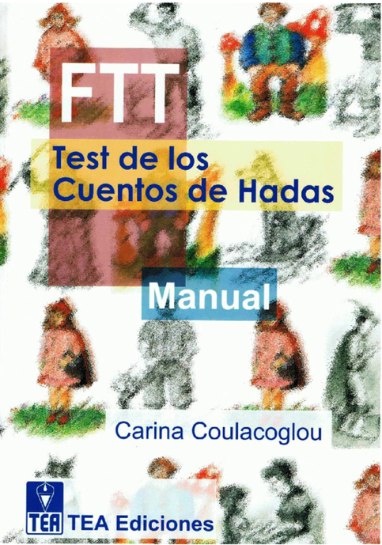
Biblioteca
FTT
Test de los Cuentos de Hadas
Personajes de cuentos clásicos para leer la personalidad infantil.
Fairy Tale Test
El FTT es una prueba proyectiva de personalidad diseñada para niños de 7 a 12 años, aunque también puede aplicarse a los 6 o entre los 13 y 14 años según el nivel de madurez del niño. Consta de 21 láminas con personajes clásicos de cuentos de hadas, como Caperucita Roja, el lobo, la bruja, el gigante y el enano, agrupadas en siete series que el niño observa mientras responde preguntas dirigidas sobre cada personaje. Su aplicación es individual, en una sola sesión, con una duración aproximada de 45 minutos. Permite una interpretación cuantitativa, mediante 26 variables de personalidad convertidas a puntuaciones T sobre una muestra normativa de 800 casos, y una interpretación cualitativa, a través del análisis de los mecanismos de defensa observados en las respuestas del niño. El manual incluye baremos, criterios de puntuación y casos clínicos que respaldan su uso diagnóstico y de investigación.
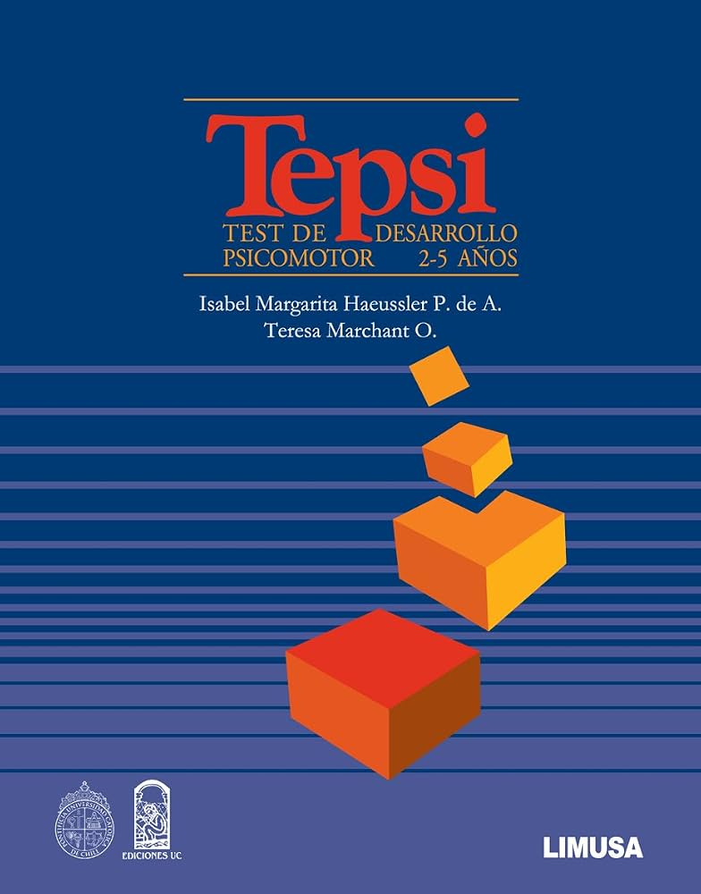
Biblioteca
TEPSI
Test de Desarrollo Psicomotor 2-5 Años
Coordinación, lenguaje y motricidad en la primera infancia.
El TEPSI es un instrumento chileno para evaluar el desarrollo psicomotor de niños de 2 a 5 años, elaborado por las psicólogas Isabel Margarita Haeussler y Teresa Marchant. Está compuesto por 52 tareas organizadas en tres subtests: coordinación, lenguaje y motricidad, que en conjunto permiten estimar de forma general si el desarrollo del niño corresponde a lo esperado para su edad. Su aplicación es individual, utiliza materiales sencillos y de bajo costo, y su administración y corrección son relativamente rápidas. Fue estandarizado con normas en población infantil chilena y cuenta con índices de confiabilidad y validez adecuados para uso clínico y escolar. Se emplea con frecuencia para evaluar programas de educación preescolar, detectar de forma temprana posibles retrasos del desarrollo y como apoyo en investigaciones sobre infancia. El manual incluye las instrucciones de aplicación, calificación e interpretación de los tres subtests que componen la prueba.
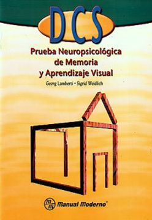
Biblioteca
DCS
Prueba Neuropsicológica de Memoria y Aprendizaje Visual
Barritas de madera para leer la memoria visual.
El DCS evalúa de forma cualitativa y cuantitativa la memoria y el aprendizaje visual en personas con alteraciones neuropsicológicas. Fue desarrollado por Georg Lamberti y Sigrid Weidlich y publicado en español por Editorial El Manual Moderno en 2002. La prueba consiste en presentar al sujeto una serie de figuras que debe memorizar y reproducir después utilizando pequeñas barritas de madera incluidas en el material, lo que permite observar tanto el proceso de aprendizaje como los errores de reproducción espacial. Su aplicación es individual y se ha utilizado en la evaluación neuropsicológica de pacientes con daño cerebral por traumatismo, eventos cerebrovasculares, epilepsia, afasia e incluso trastornos psiquiátricos. El material completo incluye manual, hojas de registro, tarjetas y barritas de madera. Es una herramienta frecuente en neuropsicología clínica para documentar el estado de la memoria visual y el aprendizaje figurativo en distintas poblaciones adultas.
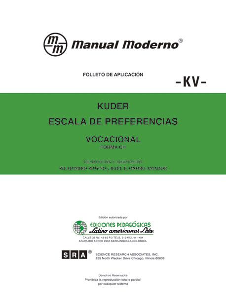
Biblioteca
KUDER
Escala de Preferencias Vocacionales (Kuder-C)
Diez campos de interés para orientar una vocación.
El Kuder-C es un cuestionario de preferencias vocacionales desarrollado originalmente por G. Frederic Kuder y adaptado al español por TEA Ediciones. Evalúa los intereses del sujeto en diez campos ocupacionales: aire libre, mecánico, cálculo, científico, persuasivo, artístico, literario, musical, asistencial y administrativo. Su objetivo es identificar las áreas hacia las que se orientan de forma más natural los intereses de la persona, como apoyo a procesos de orientación vocacional y selección de personal. Se aplica a adolescentes y adultos, de forma individual o colectiva, y se usa tanto en el ámbito escolar, para conocer los intereses profesionales de los alumnos, como en recursos humanos, para valorar la motivación de aspirantes a distintos puestos. Incluye una escala de verificación que permite detectar descuido, equivocación o respuestas poco probables durante la aplicación, lo que aporta un control adicional sobre la fiabilidad de las respuestas obtenidas.
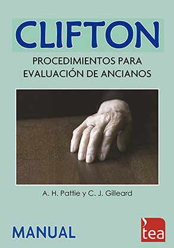
Biblioteca
CLIFTON
Procedimientos para Evaluación de Ancianos
Una mirada breve al deterioro cognitivo en la vejez.
El CLIFTON reúne dos medidas independientes, el CAS y el BRS, que juntas permiten obtener una evaluación global del deterioro cognitivo y conductual en personas mayores. El CAS es una prueba breve y sencilla que estima el nivel de deterioro mental, mientras que el BRS es una escala de valoración que puede completar un observador externo familiarizado con la conducta habitual del sujeto, y que ofrece una medida global de discapacidad. Ambos procedimientos fueron desarrollados en el Clifton Hospital de York para apoyar el diagnóstico del grado de deterioro y dependencia en personas mayores. Por su sencillez y brevedad, puede ser aplicado por psicólogos y también por trabajadores sociales, terapeutas ocupacionales, personal de enfermería o médicos, y resulta poco estresante incluso para personas con niveles de capacidad muy distintos. Su administración toma aproximadamente 25 minutos y requiere un entrenamiento reducido.
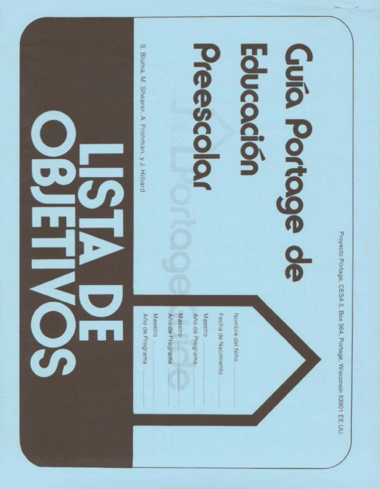
Biblioteca
PORTAGE
Guía Portage de Educación Preescolar
Un mapa de destrezas para los primeros seis años.
La Guía Portage de Educación Preescolar, desarrollada por Susan M. Bluma, Marsha S. Shearer, Alma H. Frohman y Jean M. Hilliard, es una guía curricular para evaluar el comportamiento de un niño y planear un programa de estimulación con metas realistas hacia nuevas destrezas. A diferencia de una prueba psicométrica con baremos, funciona como un listado de conductas organizado en cinco áreas del desarrollo (socialización, lenguaje, autoayuda, cognición y desarrollo motriz), más una sección inicial sobre estimulación del bebé, con 578 fichas de referencia en total. Está dirigida a niños de 0 a 6 años, su aplicación es individual y no tiene un tiempo límite de administración. Se utiliza tanto en el ámbito escolar como en el clínico, principalmente en programas de estimulación temprana y educación especial. Por su naturaleza de guía curricular más que de instrumento estandarizado, su valor principal está en la planificación de objetivos de intervención, no en la obtención de puntuaciones normativas.
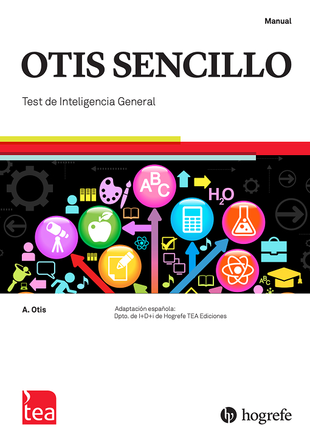
Biblioteca
OTIS
Otis Sencillo. Test de Inteligencia General
Setenta y cinco preguntas para estimar la inteligencia general.
El Otis Sencillo es un test de inteligencia general desarrollado por Arthur S. Otis, con adaptación española de M. Yela y colaboradores, publicado por TEA Ediciones. Está compuesto por 75 elementos que evalúan distintos aspectos de la inteligencia, entre ellos el razonamiento deductivo, el razonamiento inductivo y el conocimiento léxico, y ofrece una estimación del desarrollo mental del sujeto y de su capacidad para adaptar conscientemente su pensamiento a nuevas exigencias. Está diseñado para medir la capacidad intelectual en personas de nivel cultural bajo o medio, y puede aplicarse a partir de los 11 años, de forma individual o colectiva. Su administración toma unos 30 minutos de trabajo efectivo, o alrededor de 45 minutos si se incluyen la corrección y la interpretación. Por la sencillez de su aplicación y corrección, es especialmente utilizado en procesos de selección de personal.
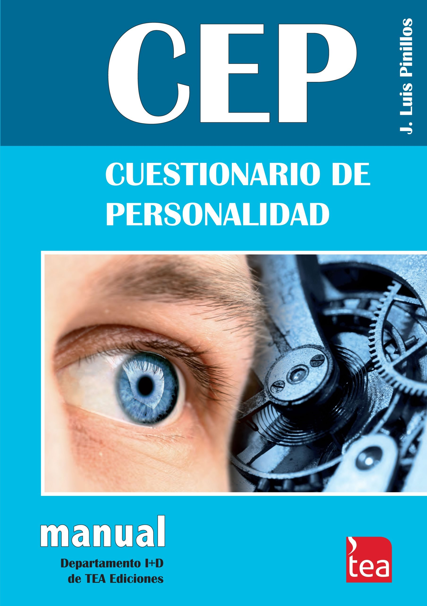
Biblioteca
CEP
Cuestionario de Personalidad
Tres rasgos bipolares para retratar la personalidad.
El CEP es un cuestionario de personalidad desarrollado por José Luis Pinillos que valora tres aspectos bipolares del carácter: estabilidad emocional, extraversión social y paranoidismo. La escala de estabilidad emocional indica si la persona experimenta cambios de ánimo sin causa aparente o por motivos triviales, lo que puede ser un indicador de tendencia depresiva; la escala de extraversión valora el optimismo y la facilidad para las relaciones sociales; y la escala de paranoidismo recoge agresividad, suspicacia y tenacidad rígida. Incluye además dos escalas auxiliares para controlar la sinceridad de las respuestas y la indecisión al contestar. Con 145 elementos, es un cuestionario relativamente rápido y sencillo de aplicar, que la mayoría de las personas completa en 20 a 25 minutos. Es aplicable desde los 14 o 15 años en adelante, a personas de cualquier nivel cultural o profesional, y permite ubicar al sujeto en cada rasgo respecto a distintos grupos normativos.
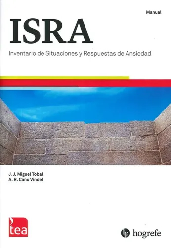
Biblioteca
ISRA
Inventario de Situaciones y Respuestas de Ansiedad
Ansiedad medida situación por situación, respuesta por respuesta.
El ISRA evalúa la ansiedad desde un enfoque interactivo y multidimensional, combinando el modelo situación por respuesta de Endler con el modelo multidimensional de la emoción de Lang, que distingue respuestas cognitivas, fisiológicas y motoras. Fue desarrollado por Juan José Miguel Tobal y Antonio Cano Vindel y publicado por TEA Ediciones. El inventario está formado por 22 situaciones y 24 respuestas que se combinan en 224 elementos, y permite obtener tanto un nivel general de ansiedad como rasgo, como una descomposición de las respuestas cognitivas, fisiológicas y motoras asociadas a distintos tipos de situación: de evaluación, interpersonales, fóbicas y de la vida cotidiana. Su aplicación es individual, dirigida a personas a partir de los 16 años, y su administración toma aproximadamente 50 minutos. Es un instrumento ampliamente utilizado en investigación clínica y de salud, tanto en España como en otros países de habla hispana.
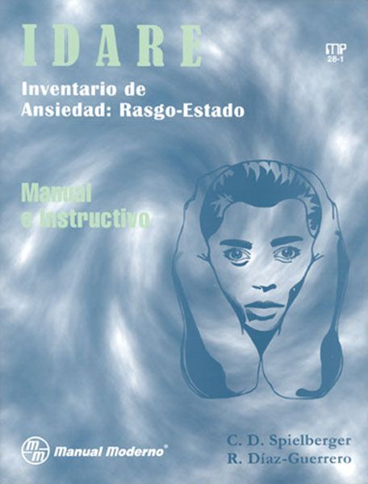
Biblioteca
IDARE
Inventario de Ansiedad Rasgo-Estado
Separar el miedo pasajero del rasgo que se queda.
State-Trait Anxiety Inventory (STAI)
El IDARE es la versión en español del State-Trait Anxiety Inventory (STAI) de Charles D. Spielberger, adaptada por Rogelio Díaz-Guerrero para población de origen hispano. Spielberger destacó la necesidad de distinguir entre la ansiedad como rasgo relativamente estable de la personalidad y la ansiedad como estado emocional transitorio, y el IDARE fue diseñado justamente para obtener ambas medidas por separado. Cada una de las dos escalas, Estado y Rasgo, está formada por 20 elementos: la escala de Estado incluye 10 ítems de ansiedad positiva y 10 negativos, mientras que la escala de Rasgo incluye 13 ítems positivos y 7 negativos, con un formato de respuesta de 0 a 4 en ambas subescalas. Puede aplicarse de forma individual, colectiva o autoadministrada, con una duración de 15 a 25 minutos, y está dirigido a psicólogos y psiquiatras que trabajan con adultos de nivel educativo medio-superior o mayor.
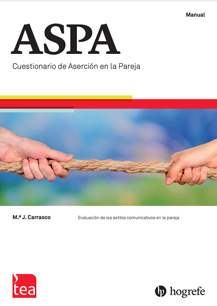
Biblioteca
ASPA
Cuestionario de Aserción en la Pareja
Cuatro formas de comunicarse cuando algo no funciona en pareja.
El ASPA evalúa cuatro tipos de estrategias de comunicación que puede emplear cada miembro de una pareja frente a situaciones problemáticas de la convivencia: asertiva, agresiva, sumisa y agresivo-pasiva. Fue desarrollado por María J. Carrasco y publicado por TEA Ediciones en 1996. El cuestionario consta de dos partes: en la Forma A la persona evalúa su propio comportamiento en situaciones conflictivas de pareja, mientras que en la Forma B evalúa el comportamiento de su pareja. Cada forma incluye 40 preguntas sobre aspectos representativos de la vida en pareja, como las relaciones sexuales, las manifestaciones de afecto o interés, la comunicación, el tiempo de ocio y las tareas del hogar. Puede aplicarse a uno o a ambos miembros de la pareja, y está dirigido a adultos que conviven o han convivido en pareja. Su administración toma entre 15 y 20 minutos, y las puntuaciones se expresan en razones y percentiles diferenciados por sexo y forma.
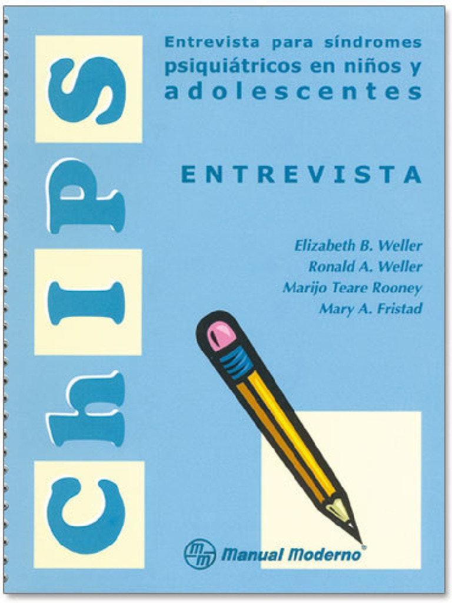
Biblioteca
ChIPS
Entrevista para Síndromes Psiquiátricos en Niños y Adolescentes
Veinte trastornos psiquiátricos, una entrevista estructurada.
Children's Interview for Psychiatric Syndromes
El ChIPS es una entrevista psiquiátrica altamente estructurada, basada en criterios del DSM, diseñada para obtener información de forma rápida y eficiente sobre la presencia de 20 trastornos en niños y adolescentes. Surgió en la División de Psiquiatría Infantil de la Facultad de Medicina de la Universidad de Kansas, con el objetivo de contar con una entrevista diagnóstica breve y fácil de aplicar. Entre los trastornos que permite detectar están el déficit de atención con hiperactividad, el trastorno negativista desafiante, el trastorno de conducta, el abuso de sustancias, el trastorno de ansiedad por separación, el trastorno obsesivo-compulsivo, el estrés postraumático, la anorexia, la bulimia, la enuresis, la encopresis, la esquizofrenia y los cuadros psicóticos. Está dirigida a niños y adolescentes de 6 a 18 años, y el material incluye el manual y hojas de registro. Existe también una versión complementaria, el P-ChIPS, pensada para ser respondida por los padres.
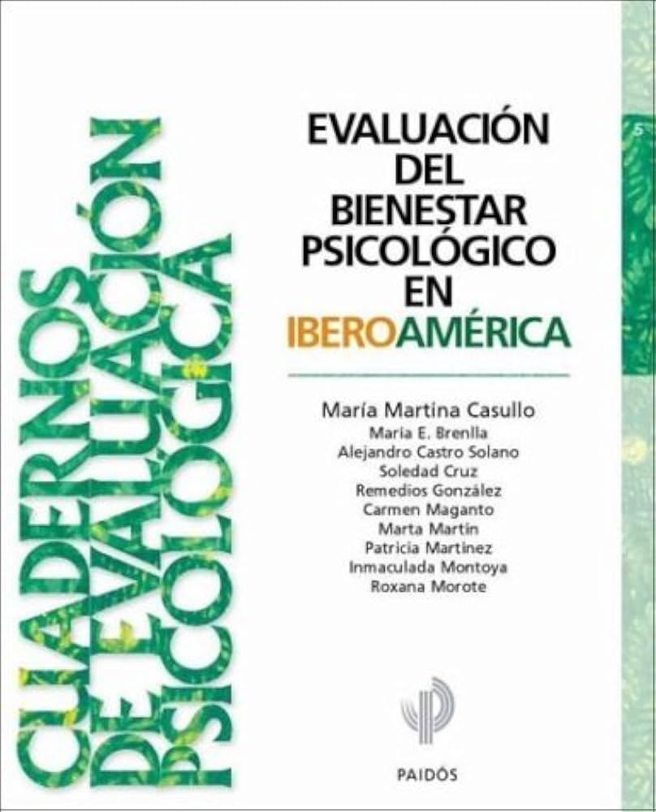
Biblioteca
BIEPS
Evaluación del Bienestar Psicológico en Iberoamérica
Bienestar psicológico medido en cuatro dimensiones, para toda Iberoamérica.
Este volumen, elaborado por María Martina Casullo y María Elena Brenlla junto con un equipo de colaboradores de distintos países, reúne dos escalas breves para evaluar el bienestar psicológico: la BIEPS-J, dirigida a adolescentes, y la BIEPS-A, dirigida a adultos. La BIEPS-J se basa en la teoría multidimensional de Ryff y está formada por 13 elementos agrupados en cuatro dimensiones: control, vínculos, proyectos y aceptación. Ambas escalas cuentan con evidencia de validez convergente y discriminante, así como con índices de confiabilidad adecuados a nivel global, y han sido validadas en países como Argentina, Perú, Uruguay y Venezuela. Más que una prueba única con un solo conjunto de normas, el libro funciona como un cuaderno de evaluación psicológica que reúne ambos instrumentos, sus fundamentos teóricos y sus propiedades psicométricas. Es un recurso frecuente en investigación sobre bienestar psicológico en población de habla hispana, tanto en contextos clínicos como educativos.
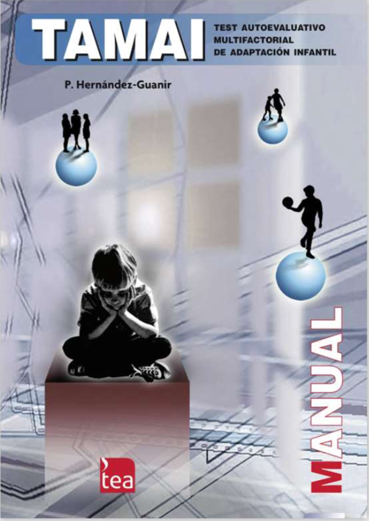
Biblioteca
TAMAI
Test Autoevaluativo Multifactorial de Adaptación Infantil
Inadaptación personal, escolar, social y familiar, en un mismo test.
El TAMAI, desarrollado por Pedro Hernández Hernández, es un test de autoevaluación dirigido a valorar la inadaptación personal, escolar, social y familiar de niños y adolescentes, además de las actitudes educadoras de los padres. Considera al niño desde una perspectiva funcional e integral, y ofrece información en áreas como inadaptación general, personal, escolar y social, insatisfacción familiar e insatisfacción con los hermanos, educación adecuada del padre y de la madre, discrepancia educativa y pro-imagen, entre otras. Estos subfactores se agrupan en clústers que permiten identificar posibles raíces de la inadaptación del niño. Puede aplicarse de forma individual o colectiva a personas de entre 8 y 18 años, con una duración aproximada de 30 a 40 minutos. Además de su uso diagnóstico, el TAMAI está pensado para evaluar cambios en el marco de programas de intervención, lo que lo hace útil tanto en el ámbito clínico como en el escolar.
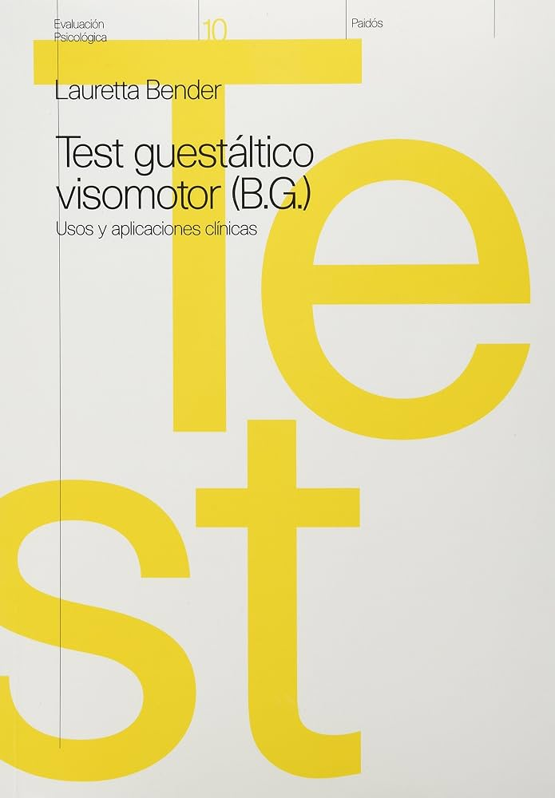
Biblioteca
BG
Test Guestáltico Visomotor
Nueve figuras geométricas para leer la maduración visomotriz.
Bender-Gestalt Test
El Test Guestáltico Visomotor, conocido como BG o Bender-Gestalt, fue elaborado por Lauretta Bender en el Bellevue Hospital de Nueva York a partir de la psicología de la Gestalt, y es uno de los instrumentos clínicos más utilizados en la evaluación visomotriz. Consiste en presentar al sujeto una serie de tarjetas con figuras geométricas, de las cuales se seleccionaron nueve de las diez originales propuestas por Wertheimer, para que las copie en una hoja en blanco. Es una prueba no verbal, neutra e inofensiva que permite explorar retrasos, pérdida de función y daño cerebral orgánico en niños y adultos, así como detectar desviaciones de personalidad, en particular cuando se manifiestan fenómenos de regresión. Puede aplicarse de forma individual o colectiva y su administración toma aproximadamente 15 minutos. La edición completa incluye manual, nueve tarjetas, protocolos de registro y una guía de aplicación.
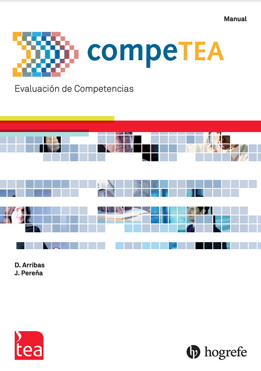
Biblioteca
CompetEA
Evaluación de Competencias
Veintidós competencias laborales, cinco áreas de desempeño.
CompetEA es un cuestionario de autoinforme desarrollado por David Arribas y Jaime Pereña para evaluar competencias tal como se entienden en el contexto laboral actual. Mide 22 competencias agrupadas en cinco áreas: intrapersonal (autocontrol, estabilidad emocional, seguridad en sí mismo, resistencia a la adversidad), interpersonal (comunicación, establecimiento de relaciones, negociación, influencia, trabajo en equipo), desarrollo de tareas (iniciativa, innovación y creatividad, orientación a resultados, capacidad de análisis, toma de decisiones), entorno (conocimiento de la empresa, visión, orientación al cliente, apertura, identificación con la empresa) y gerencial (delegación, dirección, liderazgo, planificación). Incluye además una escala de sinceridad que ayuda a valorar la consistencia de las respuestas. Puede aplicarse de forma individual o colectiva, con una duración de entre 25 y 35 minutos. Es un instrumento frecuente en procesos de selección de personal, evaluación del desempeño y programas de desarrollo profesional dentro de las organizaciones.
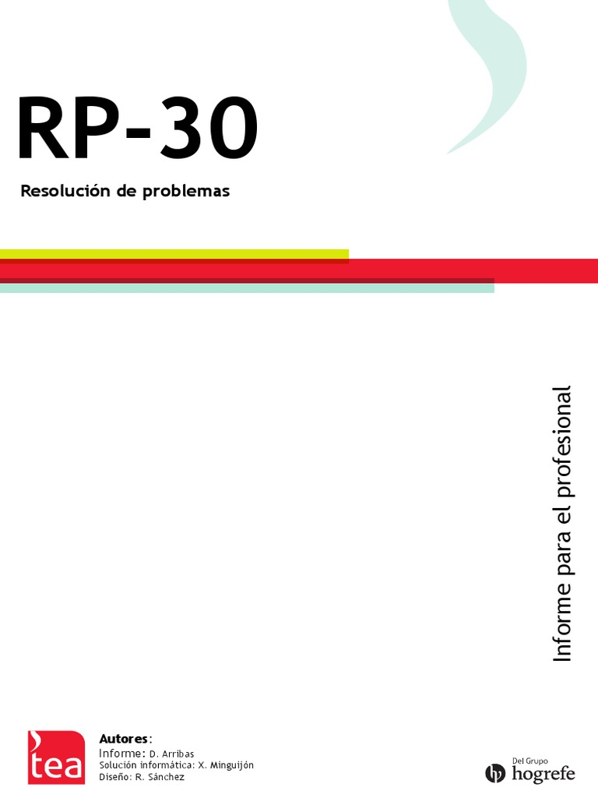
Biblioteca
RP-30
Resolución de Problemas
Treinta problemas para medir la velocidad del razonamiento lógico.
El RP-30, desarrollado por Nicolás Seisdedos Cubero y publicado por TEA Ediciones, evalúa la velocidad y la flexibilidad para realizar operaciones lógicas. La prueba está compuesta por 30 problemas distribuidos en tres niveles de dificultad, cada uno con cinco estructuras de complejidad creciente, en las que la persona debe determinar si se cumplen las condiciones planteadas en el problema. A través de esta tarea se valora una capacidad intelectual de nivel superior, que consiste en comprender una serie de relaciones lógicas propuestas en un problema y determinar si esas mismas relaciones se cumplen en otra estructura más simple. Está dirigido a adolescentes y adultos, puede aplicarse de forma individual o colectiva, y su administración toma 17 minutos. Por su brevedad y su enfoque en el razonamiento lógico, es un instrumento habitual en procesos de selección de personal y en baterías de aptitudes generales.
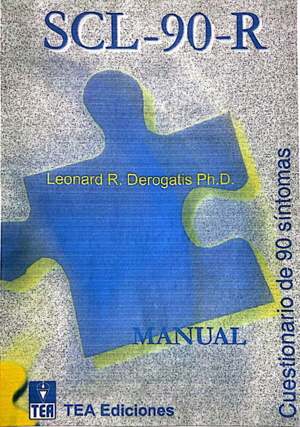
Biblioteca
SCL-90-R
Cuestionario de 90 Síntomas
Noventa síntomas para trazar un perfil de salud mental.
Symptom Checklist 90 Revised
El SCL-90-R, creado por Leonard R. Derogatis, es un cuestionario breve que ofrece un perfil de dimensiones sintomáticas primarias de salud mental, junto con índices globales e información sobre síntomas discretos. TEA Ediciones publicó la adaptación española en 2002, realizada por J. L. González de Rivera, C. de las Cuevas, M. Rodríguez Abuín y F. Rodríguez Pulido. El cuestionario permite apreciar nueve dimensiones sintomáticas de psicopatología, entre ellas somatización, obsesión-compulsión, sensibilidad interpersonal, depresión, ansiedad, hostilidad, ansiedad fóbica, ideación paranoide y psicoticismo, además de tres índices globales de malestar. Puede aplicarse de forma individual o colectiva a personas a partir de los 13 años, y su administración toma entre 12 y 15 minutos. Por su brevedad y su cobertura amplia de síntomas, es uno de los instrumentos de cribado más utilizados en salud mental, tanto en contextos clínicos como en investigación.
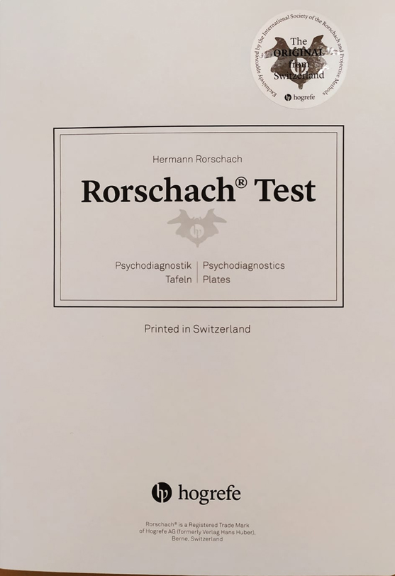
Biblioteca
Rorschach
Psicodiagnóstico de Rorschach
Diez láminas de tinta para explorar la personalidad profunda.
Psychodiagnostik
El test de Rorschach es una técnica proyectiva creada por el psiquiatra suizo Hermann Rorschach para la evaluación de aspectos profundos de la personalidad. Está compuesto por diez láminas con manchas de tinta simétricas: cinco acromáticas, dos en blanco, negro y rojo, y tres a color, que se presentan al sujeto para que indique qué puede ver en cada una de ellas. Rorschach publicó la prueba por primera vez en 1921 bajo el título Psychodiagnostik, a través de la editorial Ernst Bircher de Berna, tras aceptar reducir el número original de láminas a diez. La interpretación de las respuestas se apoya en sistemas de codificación y tabulación, entre los que el Sistema Comprehensivo de Exner se ha convertido en el más utilizado en la mayor parte del mundo. El test se difundió rápidamente en España desde su publicación original, y sigue siendo uno de los instrumentos proyectivos de personalidad más estudiados en la práctica clínica.
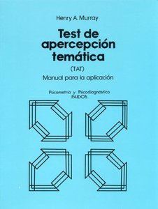
Biblioteca
TAT
Test de Apercepción Temática
Treinta y una láminas, tantas historias como personalidades.
Thematic Apperception Test
El TAT es un test proyectivo desarrollado en 1943 por Henry A. Murray, con la colaboración de Christiana Morgan, orientado a valorar las necesidades, expectativas y miedos inconscientes que influyen en el comportamiento y la personalidad. Consiste en 31 láminas que muestran escenas e imágenes ambiguas a partir de las cuales la persona debe inventar una historia, proyectando en ella sus propias tendencias, conflictos y temas predominantes. Algunas láminas están diseñadas para grupos específicos, identificados con las letras M para varones adultos, B para niños, F para mujeres y G para niñas. A través de las historias construidas por el sujeto, el TAT permite explorar áreas como las relaciones familiares, laborales, sociales y afectivas. Se aplica de forma individual a partir de los 11 o 12 años, y su duración varía según la versión utilizada, entre 60 minutos en la forma abreviada y 120 minutos en la forma extensa.
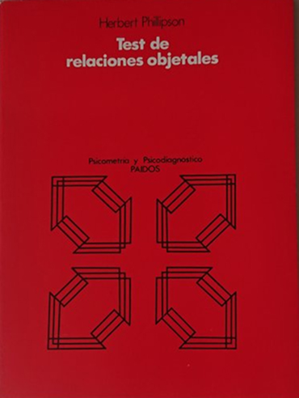
Biblioteca
TRO
Test de Relaciones Objetales
Trece láminas para explorar las relaciones objetales inconscientes.
El TRO fue ideado en 1955 por Herbert Phillipson como una técnica proyectiva que combina el poder de dramatización sugestiva propio del TAT con la neutralidad temática característica del test de Rorschach. Su base teórica se apoya en las concepciones psicoanalíticas sobre las relaciones objetales inconscientes de Melanie Klein y Fairbairn, en las nociones de H. Ezriel sobre terapia de grupo, y en las ideas de J. Sutherland acerca de las dinámicas conscientes e inconscientes. Está compuesto por 13 láminas y fue diseñado para analizar las actitudes del sujeto hacia las relaciones objetales, con el propósito de aislar las principales variables dinámicas presentes en los conflictos psicológicos. Se aplica de forma individual a personas a partir de los 13 años, con una duración variable de aproximadamente 90 minutos. El equipo completo incluye manual, juego de láminas, protocolos de análisis e interpretación, y una guía abreviada para el análisis.
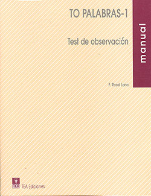
Biblioteca
TO-1
Test de Observación (Palabras-1)
Cuatro minutos para medir la atención voluntaria.
El TO Palabras-1 es uno de un conjunto de cuatro instrumentos desarrollados por Fernando Rosel Lana para medir la capacidad de observación con independencia del conocimiento académico o el nivel cultural del sujeto. La tarea consiste en encontrar, entre cuatro palabras muy similares, cuál de ellas tiene algo distinto respecto a las demás, lo que permite estimar la capacidad de atención voluntaria, la concentración y la velocidad de percepción visual. Por tratarse de una tarea rutinaria y sencilla, el resultado depende sobre todo de la atención y no de conocimientos previos, lo que facilita su uso en poblaciones diversas. Puede aplicarse de forma individual o colectiva a adolescentes y adultos, y su duración es de apenas 4 minutos. La prueba está tipificada mediante puntuaciones centiles y puntuaciones típicas S, calculadas sobre muestras escolares y de adultos.
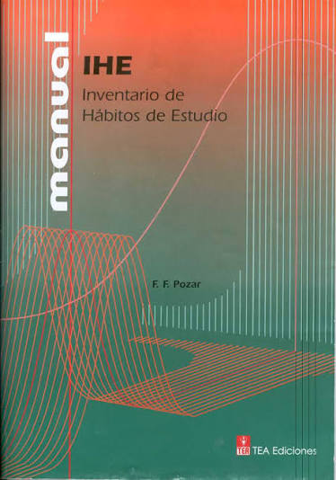
Biblioteca
IHE
Inventario de Hábitos de Estudio
Noventa preguntas para entender por qué cuesta estudiar.
El IHE evalúa la forma y las condiciones en que un estudiante realiza sus tareas, así como los fallos que limitan su eficacia al estudiar. Fue desarrollado por F. Fernández Pozar y publicado por TEA Ediciones en numerosas ediciones. El inventario está formado por 90 elementos agrupados en cuatro escalas generales (condiciones ambientales de estudio, planificación del estudio, utilización de materiales y asimilación de contenidos), cada una subdividida en factores más específicos, hasta un total de 11, además de una escala de sinceridad. Puede aplicarse de forma individual o colectiva a partir de los 12 años, y su administración, incluida la corrección, toma aproximadamente 15 minutos. El instrumento se complementa con dos programas de hábitos de estudio orientados a enseñar al estudiante a mejorar su forma de estudiar, atendiendo al lugar de estudio, la organización del trabajo y las técnicas empleadas.
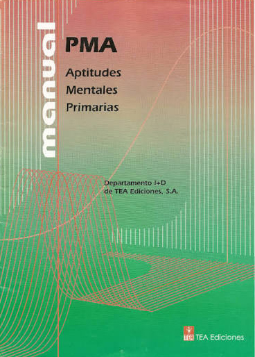
Biblioteca
PMA
Aptitudes Mentales Primarias
Cinco aptitudes primarias detrás de la inteligencia general.
Primary Mental Abilities
El PMA fue creado por L. L. Thurstone en 1943, a partir del método de análisis factorial múltiple que el propio autor había formulado desde 1931, con el objetivo de identificar aptitudes mentales independientes en lugar de una única inteligencia general. La adaptación española fue realizada por el Departamento I+D de TEA Ediciones. El test evalúa cinco aptitudes mentales primarias: comprensión verbal, aptitud espacial, razonamiento, cálculo y fluidez verbal, cada una mediante subpruebas independientes. Puede aplicarse de forma individual o colectiva a partir de los 10 u 11 años, con una duración total de unos 60 minutos, de los cuales aproximadamente 26 corresponden a tiempo de trabajo efectivo. El material incluye manual, plantilla de calificación, cuadernillo de aplicación y claves de corrección, y se utiliza tanto en el ámbito escolar como en procesos de orientación vocacional.
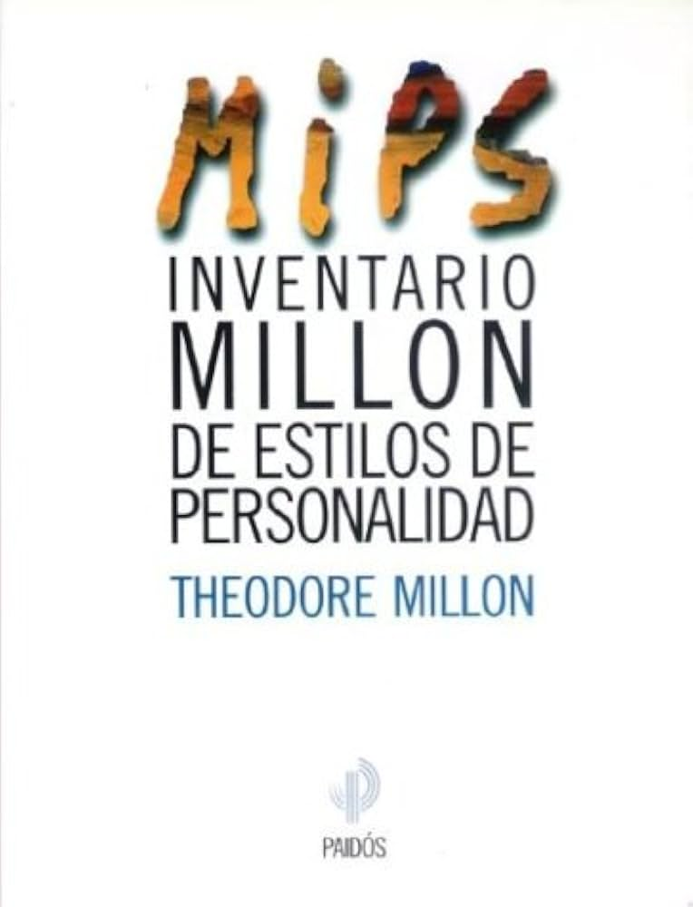
Biblioteca
MIPS
Inventario Millon de Estilos de Personalidad
Veinticuatro estilos de personalidad, dentro del rango normal.
El MIPS fue desarrollado por Theodore Millon para evaluar la personalidad de adultos de funcionamiento normal, entre los 18 y los 65 años. Su punto de partida es que los mismos principios que subyacen a los rasgos patológicos de personalidad deberían explicar también las personalidades dentro del rango normal, por lo que Millon utilizó conceptos sobre tres polaridades evolutivas básicas para deducir características esenciales de la normalidad. Es un cuestionario de 180 elementos con formato de respuesta Verdadero o Falso, que se completa en 30 a 40 minutos y puede aplicarse de forma individual o colectiva. Sus escalas se agrupan en tres grandes áreas: metas motivacionales, modos cognitivos y comportamientos interpersonales, y evalúa en conjunto 24 escalas de personalidad y 3 escalas de validez que detectan la tendencia del sujeto a distorsionar sus respuestas para dar una imagen positiva o negativa de sí mismo. La adaptación española estuvo a cargo de M.P. Sánchez López, J.F. Díaz Morales y M. Aparicio García, de la Universidad Complutense.
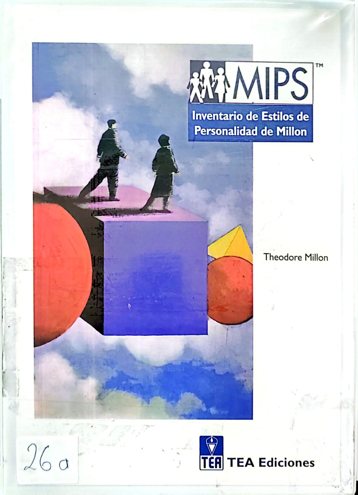
Biblioteca
MIPS
Inventario de Estilos de Personalidad de Millon
El mismo inventario, un segundo ejemplar en el acervo.
El MIPS es un inventario de personalidad desarrollado por Theodore Millon para adultos de funcionamiento normal, entre los 18 y los 65 años. Parte de la idea de que los mismos principios que explican los rasgos patológicos de personalidad también explican las personalidades dentro del rango normal, y se apoya en tres polaridades evolutivas básicas para deducir las características esenciales de la normalidad. Es un cuestionario de 180 elementos con formato de respuesta Verdadero o Falso, que se completa en 30 a 40 minutos y puede aplicarse de forma individual o colectiva. Sus escalas se organizan en tres grandes áreas: metas motivacionales, modos cognitivos y comportamientos interpersonales, con un total de 24 escalas de personalidad y 3 escalas de validez para detectar la distorsión de las respuestas. La adaptación española estuvo a cargo de M.P. Sánchez López, J.F. Díaz Morales y M. Aparicio García, de la Universidad Complutense de Madrid.
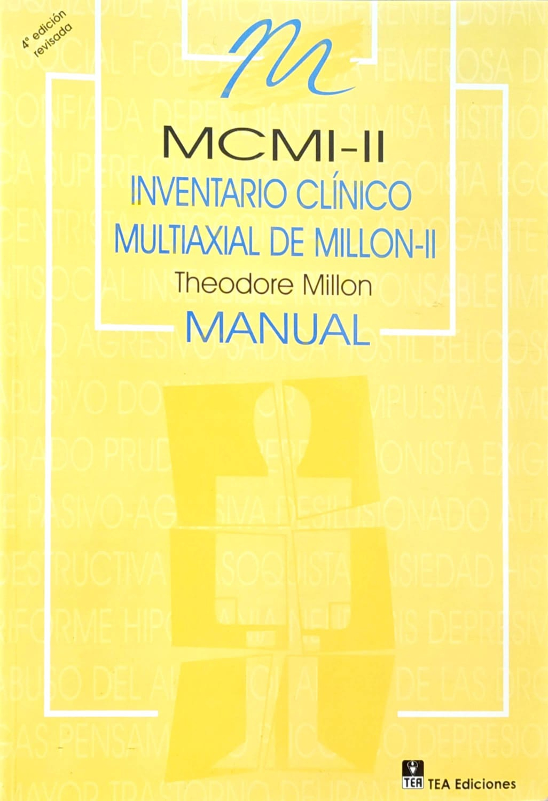
Biblioteca
MCMI-II
Inventario Clínico Multiaxial de Millon-II
Veintiséis escalas para un diagnóstico multiaxial de personalidad.
Millon Clinical Multiaxial Inventory-II
El MCMI-II es un instrumento diagnóstico desarrollado por Theodore Millon, construido de forma coherente con el formato nosológico y la terminología conceptual de los sistemas diagnósticos oficiales, donde cada escala se elaboró como una medida operativa de un síndrome derivado de una teoría de la personalidad y la psicopatología. La edición en español fue publicada por TEA Ediciones en 1998. El inventario reúne 26 escalas distribuidas en cuatro grupos: 4 escalas de fiabilidad y validez, 10 escalas básicas de personalidad, 3 escalas de personalidad patológica, 6 síndromes clínicos de gravedad moderada y 3 síndromes clínicos de gravedad severa. Consta de 175 elementos con formato de respuesta Verdadero o Falso, y su aplicación, relativamente breve, toma entre 15 y 25 minutos. Es un instrumento ampliamente utilizado en contextos clínicos para el diagnóstico multiaxial de trastornos de personalidad.
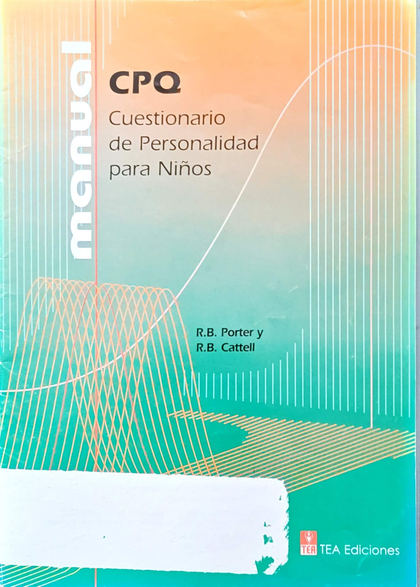
Biblioteca
CPQ
Cuestionario de Personalidad para Niños
Catorce rasgos de personalidad, vistos desde la infancia.
Children's Personality Questionnaire
El CPQ, cuyo nombre original es Children's Personality Questionnaire, fue creado por R. B. Porter y R. B. Cattell, y adaptado al español por ICCE y TEA Ediciones en 1982. Está dirigido a niños de entre 8 y 12 años, aproximadamente desde 3.º de primaria hasta 1.º de secundaria, y evalúa su personalidad mediante un cuestionario de 140 preguntas. Permite obtener información sobre 14 rasgos de primer orden y 3 dimensiones globales de personalidad, e incluye además una escala de habilidad mental o inteligencia. Puede aplicarse de forma individual o colectiva, habitualmente en dos sesiones de entre 30 y 40 minutos cada una. Por su cobertura amplia de rasgos y su diseño pensado específicamente para población infantil, es un instrumento frecuente en la evaluación psicoeducativa y clínica de niños en edad escolar.
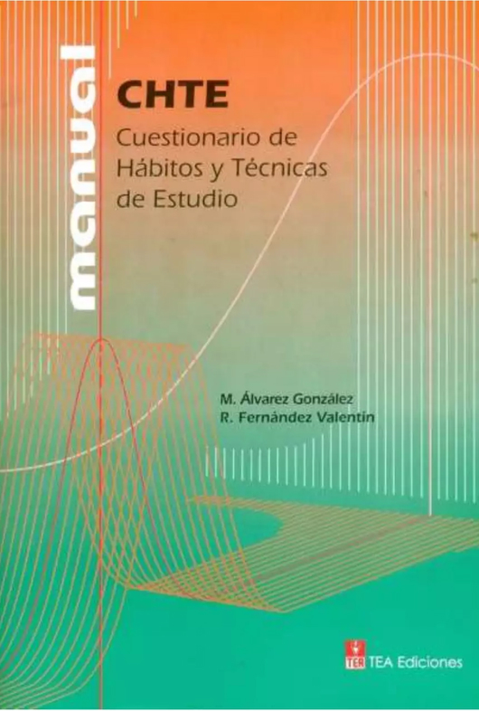
Biblioteca
CHTE
Cuestionario de Hábitos y Técnicas de Estudio
Siete escalas para diagnosticar la forma de estudiar de un alumno.
El CHTE evalúa los hábitos y técnicas de estudio que influyen en las tareas de aprendizaje, con el fin de diseñar y ejecutar programas de intervención adaptados a cada alumno. En su elaboración, Manuel Álvarez González y Rafael Fernández Valentín consideraron tres aspectos fundamentales: las condiciones físicas y ambientales del estudio, la planificación y estructuración del tiempo, y el conocimiento de las técnicas básicas de estudio. Estos aspectos se desglosan en siete escalas: actitud general hacia el estudio, lugar de estudio, estado físico del escolar, plan de trabajo, técnicas de estudio, exámenes y ejercicios, y trabajos. El cuestionario está formado por 56 preguntas distribuidas entre estas escalas. Fue publicado por primera vez por TEA Ediciones en 1990, con reediciones posteriores en 1999, 2002, 2013 y 2015, lo que refleja su uso continuado en el ámbito escolar como herramienta de diagnóstico y de orientación para la mejora de los hábitos de estudio.
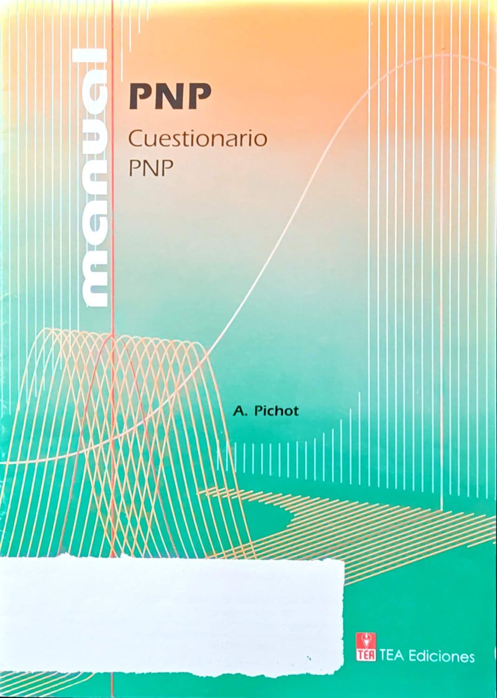
Biblioteca
PNP
Cuestionario PNP
Tres dimensiones de personalidad, del neuroticismo al psicoticismo.
El Cuestionario PNP, desarrollado por Pierre Pichot, permite detectar tendencias paranoides, neuróticas y psicopáticas, y proporciona información sobre tres dimensiones básicas de la personalidad: neuroticismo, extraversión y psicoticismo, además de una medida de la sinceridad del sujeto. Una puntuación alta en neuroticismo describe a una persona ansiosa, preocupada, con cambios de humor y con dificultad para adaptarse debido a sus fuertes reacciones emocionales. Una puntuación alta en extraversión corresponde a una persona sociable, buscadora de excitación, arriesgada y optimista. Una puntuación alta en psicoticismo describe a una persona solitaria, despreocupada por los demás, que puede generar conflictos y mostrarse insensible o cruel. Está dirigido a adolescentes y adultos, y se utiliza ampliamente en evaluaciones psicológicas tanto clínicas como forenses para caracterizar rasgos fundamentales de la personalidad, apoyándose en un formato de aplicación breve y de corrección sencilla.
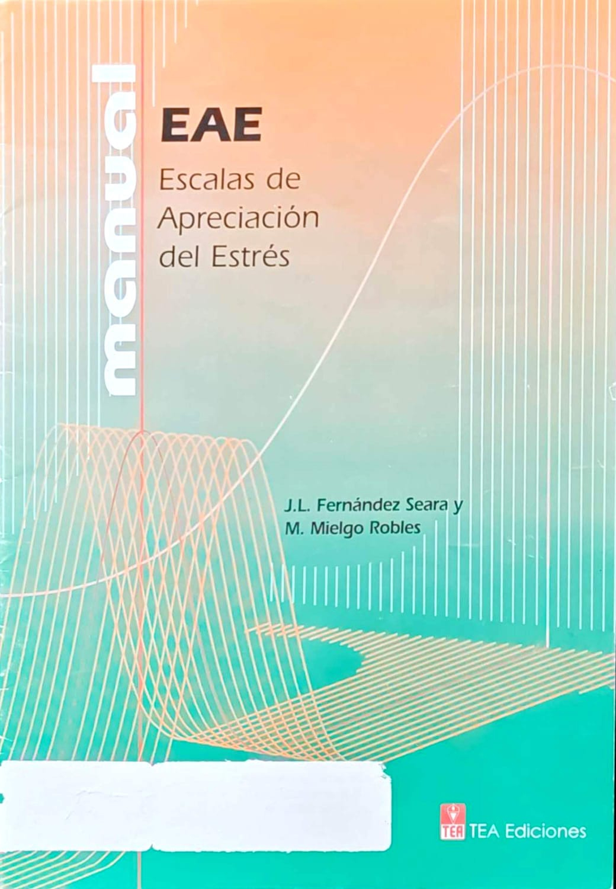
Biblioteca
EAE
Escalas de Apreciación del Estrés
Incidencia e intensidad del estrés en distintas situaciones de la vida diaria.
El EAE evalúa, a partir de situaciones potencialmente generadoras de estrés, la incidencia y la intensidad con que estas afectan la vida de cada persona. Fue desarrollado por José Luis Fernández-Seara y Manuela Mielgo Robles, y publicado por TEA Ediciones en 2001. El instrumento está organizado en distintas escalas que se aplican según el área de interés: psicología clínica y del desarrollo, para el estrés general y el estrés en personas mayores; psicología de las organizaciones, para el estrés laboral; y psicología general, para el estrés relacionado con la conducción de vehículos. Está dirigido a adultos de entre 18 y 85 años, puede aplicarse de forma individual o colectiva, y cada escala requiere entre 20 y 30 minutos de aplicación. El instrumento ofrece baremos en percentiles para la población general, calculados mediante análisis factorial, e incluye manuales de aplicación, cuadernillos de preguntas y hojas de respuestas para su corrección.
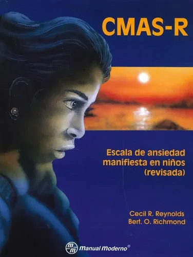
Biblioteca
CMAS-R
Escala de Ansiedad Manifiesta en Niños (Revisada)
Ansiedad infantil medida en cinco componentes distintos.
Revised Children's Manifest Anxiety Scale
El CMAS-R, desarrollado por Cecil R. Reynolds y Bert O. Richmond, evalúa la ansiedad manifiesta en niños y adolescentes de entre 6 y 19 años, con un nivel de lectura aproximado de tercer grado de primaria. Su objetivo es valorar el nivel y la naturaleza de la ansiedad en niños con problemas de estrés académico, ansiedad ante exámenes, conflictos familiares, adicciones, conductas perturbadoras o problemas de personalidad. Puede aplicarse de forma individual o colectiva, con una duración de 10 a 15 minutos para la escala completa, o de 5 minutos o menos para la escala breve. Las puntuaciones totales ofrecen un índice de ansiedad total, además de cinco puntuaciones adicionales: ansiedad fisiológica, preocupaciones, ansiedad social, defensividad, y un índice de respuestas inconsistentes que permite valorar la fiabilidad de la aplicación. Es un instrumento ampliamente utilizado en contextos clínicos y escolares para la evaluación infantil de la ansiedad.
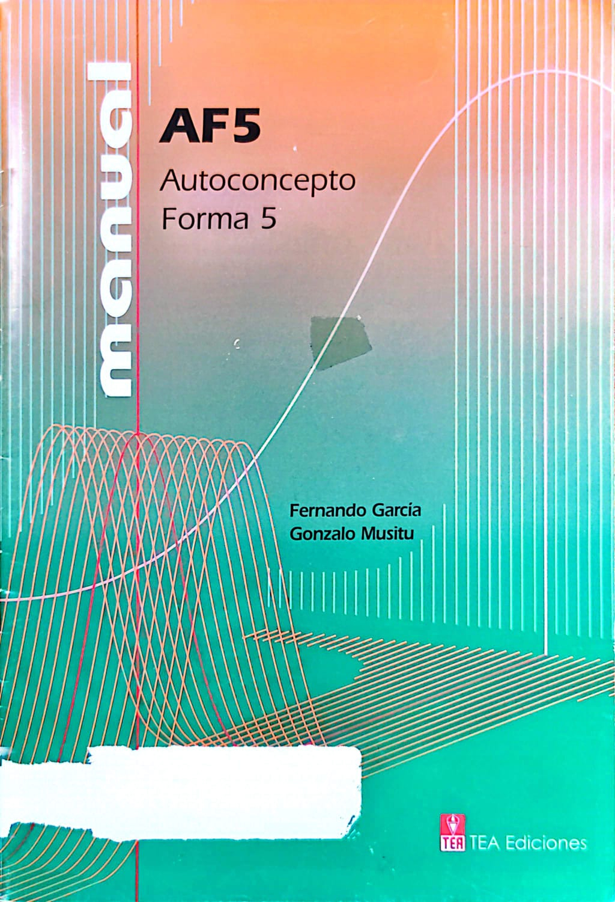
Biblioteca
AF5
Autoconcepto Forma 5
Cinco caras del autoconcepto, en treinta preguntas.
El AF5 es un cuestionario de fácil aplicación, corrección e interpretación, compuesto por 30 elementos que evalúan el autoconcepto de la persona evaluada. Fue desarrollado por Fernando García y Gonzalo Musitu a partir del modelo multidimensional del autoconcepto propuesto por Shavelson y sus colaboradores, y publicado por TEA Ediciones, con una segunda edición en 2001. El instrumento distingue cinco dimensiones del autoconcepto: académica o laboral, que recoge la percepción de la persona sobre su papel como estudiante o trabajador; social, relacionada con la visión de uno mismo a partir de sus relaciones; emocional, vinculada a la capacidad de gestionar las propias emociones; familiar, sobre la percepción de los vínculos e integración en la familia; y física, referida a la percepción sobre el propio aspecto y condición física. Su formato de respuesta va de 1 a 99, y se utiliza ampliamente en investigación psicológica y educativa sobre autoconcepto.
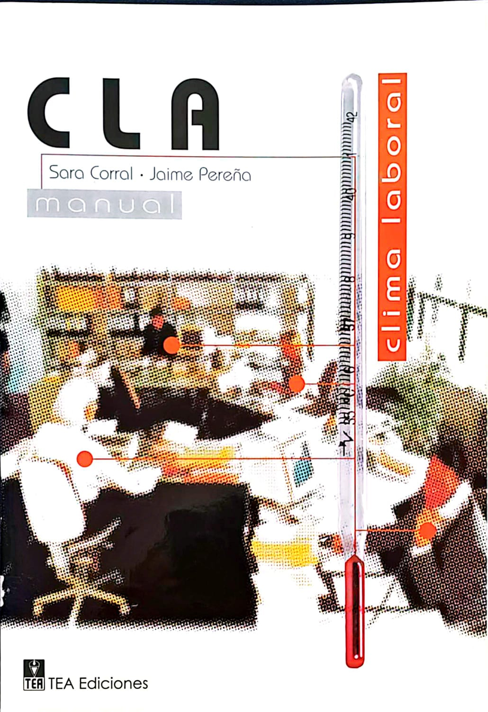
Biblioteca
CLA
Cuestionario de Clima Laboral
Ocho variables para retratar el clima de una organización.
El CLA es un cuestionario elaborado por Sara Corral Gregorio y Jaime Pereña Brand, del Departamento de I+D+i de TEA Ediciones, para evaluar el clima laboral de empresas y organizaciones. Está compuesto por 93 elementos, frases cortas que describen comportamientos que los trabajadores pueden experimentar en su puesto y que afectan su percepción general sobre la organización. El instrumento se organiza en dos grandes dimensiones, Empresa y Persona, que a su vez permiten evaluar ocho variables: organización, implicación, innovación, información, autorrealización, condiciones, relaciones y dirección, además de ofrecer una puntuación global de clima laboral. Su aplicación es colectiva, dirigida a adultos en el entorno laboral, y toma aproximadamente 25 minutos. Está disponible tanto en formato papel como en aplicación online, y su corrección puede hacerse de forma mecanizada o a través de plataforma digital, en español, catalán, francés e inglés.
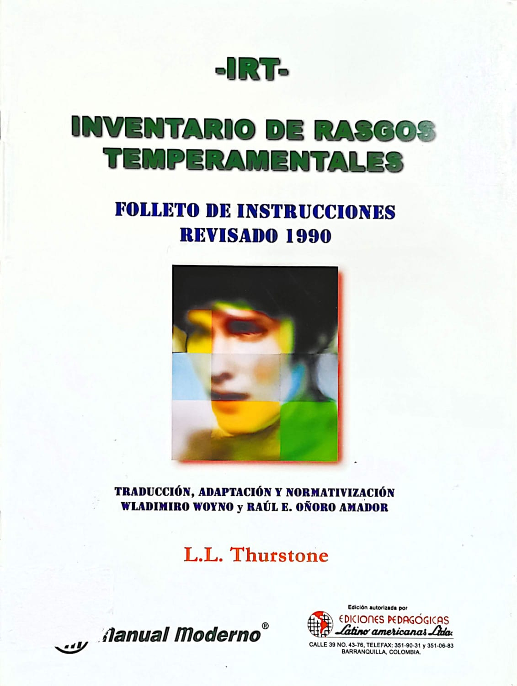
Biblioteca
IRT
Inventario de Rasgos Temperamentales
Siete áreas temperamentales, descritas sin fines clínicos ni diagnósticos.
El IRT fue elaborado por L. L. Thurstone para describir de forma práctica los aspectos temperamentales más importantes de una persona, sin pretender calificar el grado de tensión, inseguridad, conflictos internos o desadaptación al medio. Su propósito es poner de manifiesto los rasgos relativamente estables de cada persona, dejando fuera aquellos que reflejan influencias sociales recientes, experiencias perturbadoras nuevas o el efecto de la propaganda. El inventario está formado por 140 preguntas que exploran siete áreas temperamentales: activo, vigoroso, impulsivo, dominante, estable, sociable y reflexivo. Puede aplicarse de forma individual o colectiva, y su uso no tiene un propósito clínico. Thurstone, reconocido como pionero en la medición de aptitudes mentales y en el desarrollo del análisis factorial, diseñó este inventario como un complemento descriptivo a sus trabajos sobre aptitudes. La edición en español fue publicada por Editorial El Manual Moderno en 2001.
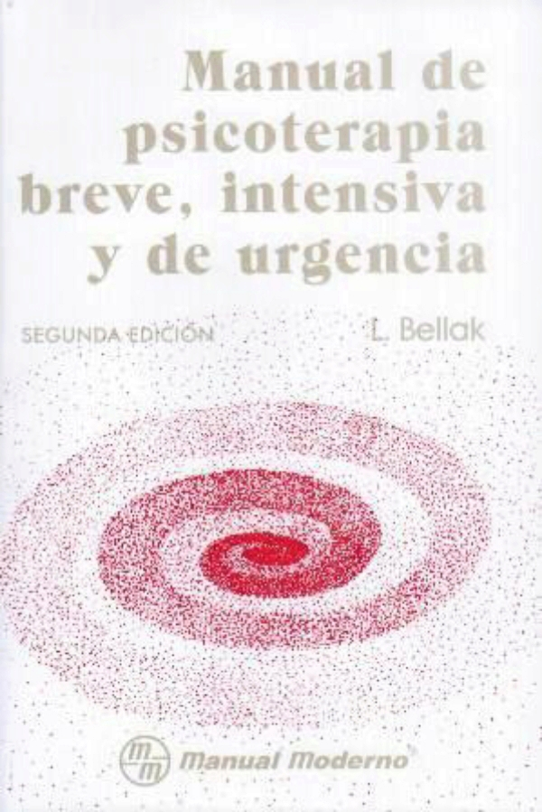
Biblioteca
MPBIU
Manual de Psicoterapia Breve, Intensiva y de Urgencia
Diez principios para intervenir cuando el tiempo apremia.
Handbook of Intensive, Brief and Emergency Psychotherapy
El MPBIU no es una prueba psicométrica, sino un manual clínico elaborado por Leopold Bellak, profesor emérito de psiquiatría del Albert Einstein College of Medicine, sobre psicoterapia breve, intensiva y de urgencia. Surgió de la necesidad de ofrecer apoyo rápido y concreto a pacientes para quienes, por el contexto en el que se encontraban, resultaba muy difícil recibir un tratamiento más prolongado y profundo. El manual está organizado en dos partes: la primera desarrolla diez principios básicos de la psicoterapia breve, intensiva y de urgencia, junto con el perfil básico del paciente, la sesión inicial, las sesiones posteriores, el proceso terapéutico y los métodos de intervención; la segunda presenta diez trastornos psiquiátricos frecuentes como paradigmas de aplicación, entre ellos la depresión, la conducta antisocial, el riesgo suicida y los estados psicóticos agudos. Incluye también una guía de preguntas y un protocolo de registro que sistematizan la evaluación y el diagnóstico.
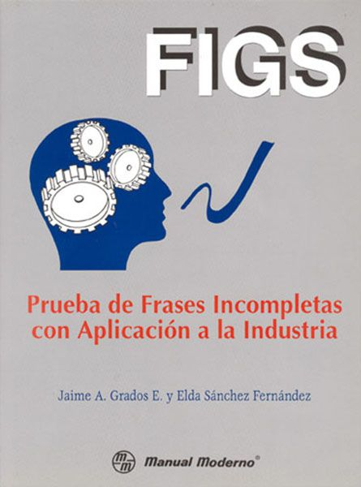
Biblioteca
FIGS
Prueba de Frases Incompletas con Aplicación a la Industria
Sesenta y ocho frases para anticipar cómo alguien encajará en un equipo.
El FIGS está diseñado para evaluar la posibilidad de una integración conveniente del examinado a la organización de trabajo. Fue desarrollado por Jaime A. Grados Espinosa y Elda Sánchez Fernández y publicado por Editorial El Manual Moderno. La prueba consta de 68 frases incompletas, organizadas en cuatro áreas y 22 actitudes: responsabilidad, que cubre el cumplimiento laboral, la percepción del sentido de la empresa y la colaboración; relaciones interpersonales, referidas al padre, la madre, la familia, la pareja, la autoridad, los compañeros, los subordinados y las personas externas; motivaciones, que incluyen necesidades de logro y afiliación, intereses fundamentales y objetivos; y características y rasgos, sobre la percepción de las propias habilidades, temores y sexualidad. Se aplica a personas adultas, de forma individual o colectiva, y su administración toma aproximadamente 30 minutos. Es un instrumento habitual en selección de personal, análisis de puestos y evaluación del desempeño.
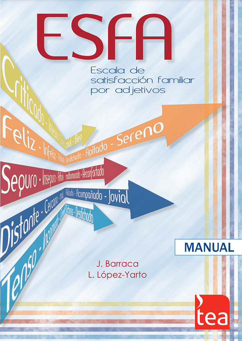
Biblioteca
ESFA
Escala de Satisfacción Familiar por Adjetivos
Pares de adjetivos para medir cómo se siente vivir en familia.
El ESFA es un instrumento breve y sencillo, formado por 27 elementos, diseñado para ofrecer una medida global de la dinámica y la satisfacción familiar. Fue desarrollado por Jorge Barraca Mairal y Luis López-Yarto Elizalde, y publicado por primera vez en 1997 por TEA Ediciones. Construido a partir de pares de adjetivos antónimos, busca provocar respuestas principalmente afectivas que reflejen los sentimientos positivos o negativos que surgen en la persona a partir de las interacciones, verbales o físicas, que mantiene con otros miembros de su familia. Cada par de adjetivos se puntúa en una escala de 1, correspondiente al aspecto negativo, a 6, correspondiente al aspecto positivo. Puede aplicarse de forma individual o colectiva a partir de los 16 años, y su administración toma unos 10 minutos. Por su brevedad y buenos índices de validez y fiabilidad, resulta útil en la práctica clínica, la investigación y contextos periciales, como informes o casos legales relacionados con la situación familiar.
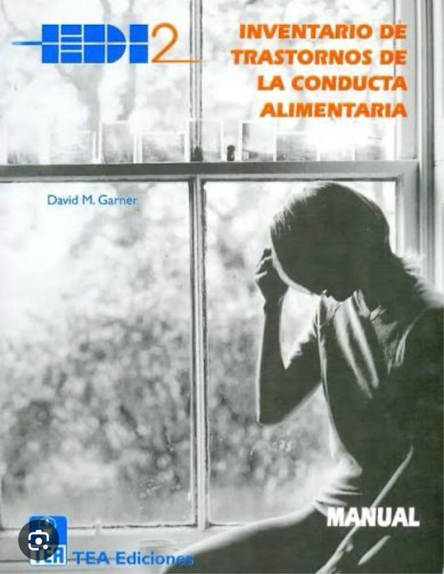
Biblioteca
EDI-2
Inventario de Trastornos de la Conducta Alimentaria
Once escalas para leer los trastornos alimentarios sin una sola puntuación total.
Eating Disorder Inventory-2
El EDI-2 fue creado por David M. Garner en 1991 y adaptado al español por TEA Ediciones en 1998, como una versión revisada del EDI original para evaluar rasgos relevantes en los trastornos de la conducta alimentaria, principalmente la anorexia y la bulimia nerviosas. Incluye ocho escalas principales (obsesión por la delgadez, bulimia, insatisfacción corporal, ineficacia, perfeccionismo, desconfianza interpersonal, conciencia interoceptiva y miedo a la madurez) y suma 27 elementos adicionales que dan lugar a tres nuevas escalas: ascetismo, impulsividad e inseguridad social, hasta un total de 11 escalas. A diferencia de otros cuestionarios, el EDI-2 no ofrece una puntuación total, debido a la dificultad de interpretar un único valor global. Puede aplicarse a partir de los 11 años, de forma individual o colectiva, con una duración aproximada de 20 minutos, y cuenta con baremos españoles y originales en centiles para muestras normales y clínicas.
Biblioteca
P-IPG
Perfil e Inventario de la Personalidad de Gordon
Ocho escalas de personalidad, basadas en la teoría de Allport.
El P-IPG combina dos instrumentos desarrollados por Leonard V. Gordon a partir de la teoría de la personalidad de Gordon Allport: el Perfil de Personalidad (PPG), que evalúa las escalas de ascendencia, responsabilidad, estabilidad emocional y sociabilidad, y el Inventario de Personalidad (IPG), que evalúa cautela, originalidad, relaciones personales y vigor. En conjunto, la prueba consta de 300 elementos que exploran una amplia gama de rasgos de personalidad. Está dirigida a adolescentes y adultos de entre 16 y 89 años, y puede aplicarse de forma individual o colectiva. Sus escalas han mostrado niveles satisfactorios de confiabilidad y estabilidad para la valoración individual, lo que la convierte en un instrumento utilizado en contextos clínicos, educativos y organizacionales. La edición en español está a cargo de Editorial El Manual Moderno.
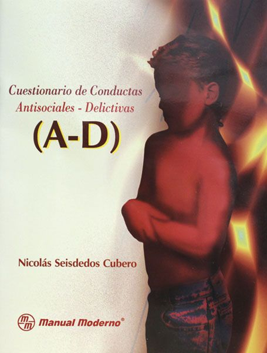
Biblioteca
A-D
Cuestionario de Conductas Antisociales-Delictivas
Cuarenta preguntas para diferenciar conducta antisocial de conducta delictiva.
El A-D es un cuestionario factorial sencillo, elaborado por Nicolás Seisdedos Cubero y publicado por TEA Ediciones, que evalúa un amplio rango de conductas sociales cercanas a la delincuencia a las que se han visto expuestos jóvenes de habla hispana. Está formado por 40 elementos que se agrupan en dos dimensiones claramente diferenciadas: la conducta antisocial, que incluye comportamientos como las trastadas, las mentiras o el absentismo escolar, y la conducta delictiva, que recoge comportamientos que incorporan contenidos delictivos o que se sitúan más fácilmente al margen de la ley. Está dirigido a adolescentes y jóvenes de entre 11 y 19 años, puede aplicarse de forma individual o colectiva, y su administración toma entre 10 y 15 minutos. El instrumento se originó en 1988 y ha tenido distintas ediciones posteriores, entre ellas una sexta edición publicada en 2009. Es utilizado en contextos clínicos, escolares y de investigación sobre conducta adolescente.
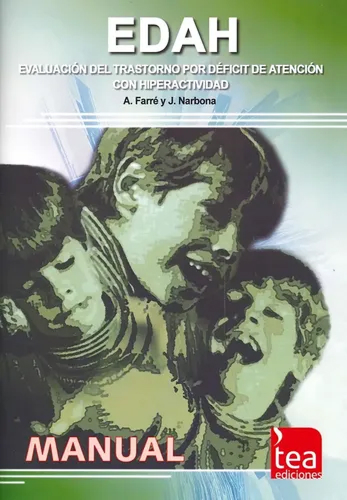
Biblioteca
EDAH
Evaluación del Trastorno por Déficit de Atención con Hiperactividad
Cuatro escalas para observar la hiperactividad y el déficit de atención en el aula.
El EDAH es un instrumento de observación estructurada, diseñado para ser completado por el profesor, que recoge información sobre el comportamiento habitual del niño en el aula. Fue elaborado por Anna Farré Riba y Juan Narbona García y publicado por TEA Ediciones en 1998. Consta de 20 elementos de fácil comprensión que requieren una inversión mínima de tiempo por parte del evaluador. A partir de las respuestas, se obtienen puntuaciones en cuatro escalas: hiperactividad, déficit de atención, hiperactividad con déficit de atención, y trastorno de conducta, esta última incluida para valorar problemas de conducta que pueden coexistir con el síndrome. Está dirigido a niños de 6 a 12 años, de primero a sexto de primaria, y su aplicación es individual, con una duración de entre 5 y 10 minutos. Es un instrumento habitual en el ámbito escolar y clínico para apoyar la identificación temprana del trastorno por déficit de atención con hiperactividad.
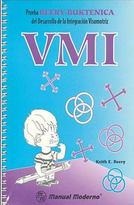
Biblioteca
VMI
Prueba Beery-Buktenica del Desarrollo de la Integración Visomotriz
Formas geométricas de complejidad creciente para evaluar la integración visomotriz.
El VMI evalúa la integración visomotriz mediante la copia a lápiz de una secuencia de formas geométricas ordenadas en complejidad creciente. Fue desarrollado por Keith E. Beery y Norman A. Buktenica, y la edición en español, traducida de la cuarta edición en inglés, fue publicada por Editorial El Manual Moderno en 2000. Además de la prueba principal, incluye dos pruebas suplementarias que pueden aplicarse de forma independiente: percepción visual, que evalúa el reconocimiento de las formas sin intervención motriz, y coordinación motriz, que evalúa el trazo de las formas sin la exigencia de discriminarlas visualmente. Está dirigido a personas de 3 a 17 años y 11 meses, puede aplicarse de forma individual o colectiva, y su administración toma entre 10 y 15 minutos. Es un instrumento utilizado en evaluación del desarrollo, neuropsicología y contextos educativos para identificar dificultades en la coordinación entre percepción visual y respuesta motriz.
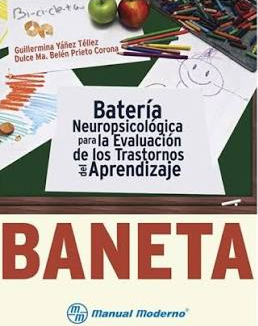
Biblioteca
BANETA
Batería Neuropsicológica para la Evaluación de los Trastornos del Aprendizaje
Cuarenta y una pruebas para explorar el aprendizaje desde la neuropsicología.
El BANETA es una batería neuropsicológica compuesta por 41 pruebas, desarrollada por Guillermina Yáñez Téllez y Dulce María Belén Prieto Corona, y publicada por Editorial El Manual Moderno en 2013, para la evaluación de niños con trastornos del aprendizaje. Explora funciones sensoriales y motoras básicas, así como funciones cognitivas superiores como la atención, el procesamiento fonológico, la repetición, la comprensión gramatical y la memoria a corto plazo, a largo plazo y de trabajo. En el área de lectura evalúa distintos niveles de procesamiento, fonológico, léxico, sintáctico y semántico, y en el área de aritmética explora la comprensión y producción numérica, los mecanismos sintácticos y léxicos, los procesos de recuperación en memoria y el uso de procedimientos de cálculo. Está dirigida a niños de 7 años a 11 años 11 meses, su aplicación es individual, y su administración completa toma aproximadamente 3 horas, por lo que puede dividirse en dos sesiones.
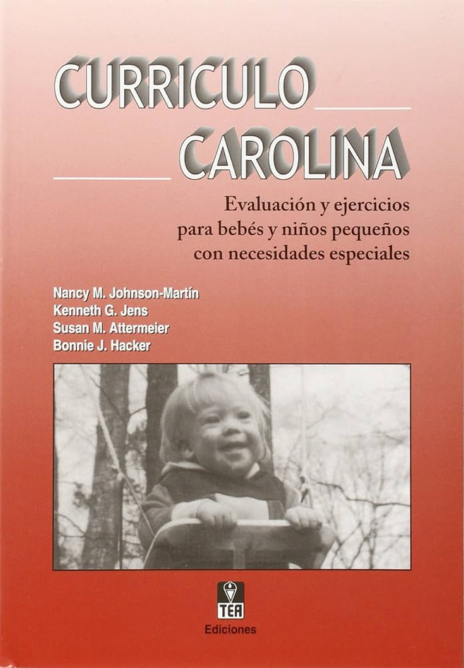
Biblioteca
CURRÍCULO CAROLINA
Evaluación y Ejercicios para Bebés y Niños Pequeños con Necesidades Especiales
Veintiséis secuencias de desarrollo para bebés y niños con necesidades especiales.
El Currículo Carolina no es una prueba psicométrica, sino una guía curricular de evaluación e intervención elaborada por Nancy M. Johnson-Martin, Kenneth G. Jens, Susan M. Attermeier y Bonnie J. Hacker, dirigida a bebés y niños pequeños con necesidades especiales o en riesgo de presentar retrasos en el desarrollo. Está organizado en 26 secuencias lógicas de desarrollo, agrupadas en cinco áreas: cognición, comunicación, adaptación social, motricidad fina y motricidad gruesa. A partir de la evaluación del niño en cada secuencia, permite construir programas de intervención adaptados a sus necesidades específicas, incluyendo ajustes para niños con limitaciones visuales, auditivas o motrices, y sugiere formas de integrar las actividades propuestas en las rutinas cotidianas de la familia. No está diseñado como un esquema rígido que deba seguirse de forma estricta, sino como un rango abierto de posibilidades y sugerencias. Está dirigido a educadores de primera infancia, especialistas en intervención temprana, terapeutas y familias, y es utilizado en el ámbito clínico y educativo.
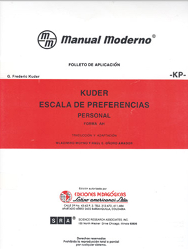
Biblioteca
KUDER-P
Escala de Preferencias Personal
Cinco áreas de preferencia personal, como complemento a la escala vocacional.
La Escala de Preferencias Personal (KP) fue desarrollada por G. Frederic Kuder como complemento a su Escala de Preferencias Vocacional, y adaptada y traducida al español por Wladimiro Woyno. Mientras la escala vocacional ubica los intereses de la persona dentro de diez grandes áreas ocupacionales, la escala personal explora la forma en que la persona preferiría desempeñarse en distintas circunstancias de trabajo, mediante cinco áreas relacionadas con el trabajo en grupo, las situaciones estables, el trabajo intelectual, las situaciones no conflictivas y la inclinación a dirigir a otros. A partir de las respuestas, permite valorar en qué medida a la persona le gusta trabajar con otros, qué papel prefiere desempeñar dentro de un grupo, si le interesa explorar nuevos campos de actividad, y si tiende a imponer su punto de vista a los demás. Se aplica a adolescentes y adultos, de forma individual o colectiva, como apoyo a procesos de orientación vocacional y de selección de personal.
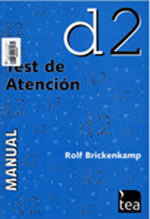
Biblioteca
d2
Test de Atención
Ocho minutos para medir la atención selectiva y la concentración.
El Test de Atención d2 evalúa la atención selectiva y la concentración a partir de una tarea de cancelación de letras, en la que la persona debe identificar y marcar, dentro de un tiempo limitado, determinados estímulos entre un conjunto de caracteres similares. Fue desarrollado originalmente por Rolf Brickenkamp, y cuenta con una adaptación española a cargo de Nicolás Seisdedos Cubero, publicada por TEA Ediciones, cuya tercera edición data de 2009. La prueba permite obtener indicadores sobre la velocidad de procesamiento, la calidad del trabajo realizado y el control de los errores por omisión o comisión, lo que ofrece una visión detallada de la capacidad de concentración de la persona evaluada. Puede aplicarse a niños, adolescentes y adultos, de forma individual o colectiva, y su administración toma entre 8 y 10 minutos, incluidas las instrucciones. Es un instrumento utilizado con frecuencia en evaluación clínica, contextos educativos y procesos de selección de personal.
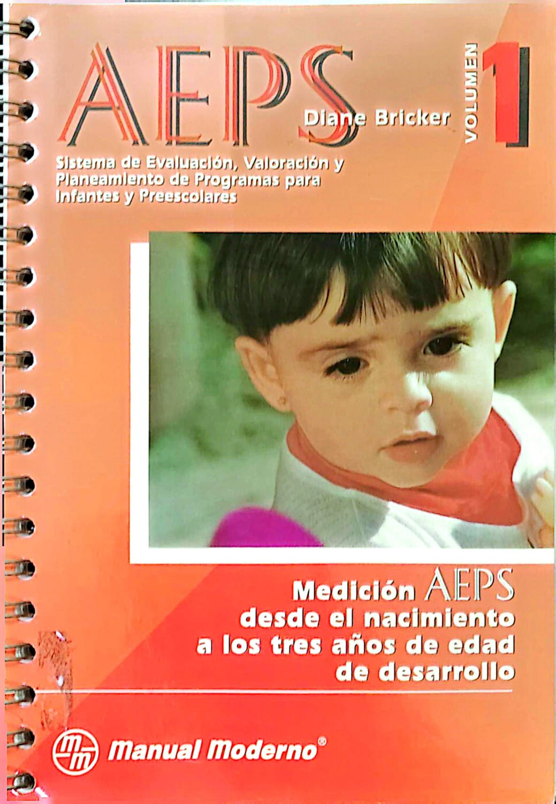
Biblioteca
AEPS
Sistema de Evaluación, Valoración y Planeamiento de Programas para Infantes y Preescolares
Seis áreas del desarrollo, evaluadas para vincular la evaluación con la intervención.
El AEPS es un sistema de evaluación, valoración y planeamiento de programas, desarrollado por Diane Bricker, diseñado para medir la evolución de las habilidades funcionales de infantes con discapacidad o en riesgo de presentar retrasos en el desarrollo. A diferencia de una prueba psicométrica con baremos normativos, el AEPS es un sistema de evaluación criterial que vincula directamente los resultados obtenidos con la selección de objetivos de intervención. Aborda seis dominios del desarrollo: motricidad gruesa, motricidad fina, cognición, área social, adaptación y comunicación social. El juego completo incluye manual, forma AEPS de registro de datos, informe familiar AEPS, encuesta AEPS de intereses familiares y registro AEPS del progreso del niño, lo que permite integrar la perspectiva de la familia en el proceso. Está dirigido a niños de 0 a 3 años, su aplicación es individual, y la edición en español fue publicada por Editorial El Manual Moderno en 1998.
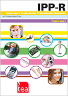
Biblioteca
IPP-R
Intereses y Preferencias Profesionales, Revisado
Quince campos profesionales, explorados desde los intereses y las preferencias.
El IPP-R es la versión revisada y actualizada del Inventario de Intereses Profesionales, desarrollada por Mª Victoria de la Cruz López y publicada por TEA Ediciones. Evalúa los intereses de la persona en 15 campos profesionales, considerando las profesiones más representativas de cada campo y las principales tareas que las componen. Mantiene las características esenciales del inventario original, en particular la existencia de dos tipos de elementos: unos referidos a las preferencias del sujeto respecto a profesiones concretas, y otros referidos a sus preferencias respecto a actividades. Respecto a la versión anterior, incorpora tres tipos de mejoras principales: la reducción del número de escalas y elementos, y con ello del tiempo de aplicación, la introducción de profesiones más recientes y actuales, y nuevos baremos más completos y representativos. Se aplica a adolescentes a partir de los 13 años y a adultos, de forma individual o colectiva, con una duración de entre 20 y 35 minutos.
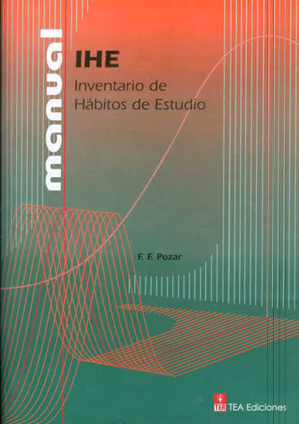
Biblioteca
IHE
Inventario de Hábitos de Estudio
El mismo inventario de hábitos de estudio, en su octava edición.
El ejemplar registrado en esta ficha corresponde a la misma prueba descrita en PS-23, el IHE, desarrollado por F. Fernández Pozar y publicado por TEA Ediciones. Se trata de un instrumento diseñado para evaluar los hábitos y las condiciones en que un estudiante realiza sus tareas, así como los fallos que limitan la eficacia de su estudio, con el fin de servir de diagnóstico previo a programas de mejora de hábitos de estudio. Consta de 90 elementos agrupados en cuatro escalas, condiciones ambientales para el estudio, planificación del estudio, utilización de materiales y asimilación de contenidos, subdivididas a su vez en 11 factores, además de una escala de sinceridad que permite valorar la fiabilidad de las respuestas. Puede aplicarse a partir de los 12 años, de forma individual o colectiva, con una duración aproximada de 15 minutos. La biblioteca conserva dos ejemplares de este instrumento, catalogados por separado según la edición física que corresponde a cada uno.
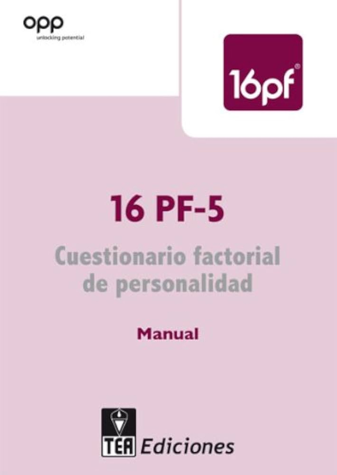
Biblioteca
16PF
Cuestionario de 16 Factores de la Personalidad
Dieciséis factores primarios para describir la personalidad adulta.
El 16PF es un cuestionario de personalidad desarrollado por Raymond B. Cattell a partir de un extenso trabajo de análisis factorial sobre el lenguaje y el comportamiento humano. Evalúa dieciséis factores primarios de personalidad, entre ellos la afabilidad, el razonamiento, la estabilidad emocional, la dominancia, la animación, la atención a las normas, el atrevimiento, la sensibilidad, la vigilancia, la abstracción, la privacidad, la aprensión, la apertura al cambio, la autosuficiencia, el perfeccionismo y la tensión. La edición en español es publicada por TEA Ediciones. Incorpora además escalas de control, como la deseabilidad social, la infrecuencia y la aquiescencia, que permiten valorar la fiabilidad de las respuestas obtenidas. Se aplica a adolescentes y adultos, de forma individual o colectiva, y es utilizado principalmente en el ámbito de la gestión de recursos humanos, para procesos de selección y desarrollo, así como en la práctica clínica. La biblioteca conserva dos ejemplares de este instrumento, catalogados por separado según la edición correspondiente.
Biblioteca
16PF
Cuestionario de 16 Factores de la Personalidad (2.ª ed.)
El mismo cuestionario factorial, en su segunda edición.
El ejemplar registrado en esta ficha corresponde a la segunda edición del 16PF descrito en PS-51, el Cuestionario de 16 Factores de la Personalidad desarrollado por Raymond B. Cattell y publicado por TEA Ediciones. Mantiene el mismo objetivo del instrumento, evaluar dieciséis factores primarios de personalidad mediante un cuestionario construido a partir de un extenso trabajo de análisis factorial sobre el comportamiento humano. Incluye escalas de control, como la deseabilidad social, la infrecuencia y la aquiescencia, que permiten valorar la fiabilidad de las respuestas obtenidas durante la aplicación. Se aplica a adolescentes y adultos, de forma individual o colectiva, y es utilizado principalmente en procesos de selección y desarrollo de recursos humanos, así como en la práctica clínica. La biblioteca conserva dos ejemplares de este instrumento, catalogados por separado según la edición física que corresponde a cada uno.
Biblioteca
NEUROPSI
Evaluación Neuropsicológica Breve en Español
Un perfil neuropsicológico breve, ajustado a la edad y la escolaridad.
El NEUROPSI es un instrumento de evaluación neuropsicológica breve, desarrollado por Feggy Ostrosky-Solís, Alfredo Ardila y Mónica Rosselli para población de habla hispana, y publicado por Editorial El Manual Moderno. Explora funciones como orientación, atención, memoria, lenguaje, funciones visoespaciales y funciones ejecutivas, mediante un conjunto de pruebas breves aplicadas de forma individual. Una de sus características distintivas es que ofrece protocolos y hojas de respuesta diferenciados según el nivel de escolaridad de la persona evaluada, desde la escolaridad nula hasta la escolaridad alta, y según distintos rangos de edad, desde los 16 hasta los 85 años, lo que permite ajustar la interpretación de los resultados al contexto educativo y cultural de cada persona. Es un instrumento utilizado con frecuencia en neuropsicología clínica y en investigación, para la detección de alteraciones cognitivas asociadas a distintas condiciones médicas y neurológicas.
Biblioteca
DAT-5
Test de Aptitudes Diferenciales
Siete aptitudes básicas, evaluadas en dos niveles según la etapa educativa.
El DAT-5 es una versión revisada y actualizada de la batería DAT, uno de los instrumentos más utilizados para la evaluación de aptitudes, desarrollada originalmente por George K. Bennett, Harold G. Seashore y Alexander G. Wesman, y publicada por TEA Ediciones. Evalúa siete aptitudes básicas: razonamiento verbal, razonamiento numérico, razonamiento abstracto, aptitud espacial, comprensión mecánica, atención y rapidez perceptiva, y ortografía, esta última incorporada como novedad respecto a versiones anteriores. Cuenta con dos niveles de aplicación: el Nivel 1, dirigido a los primeros cursos de secundaria y ciclos formativos de grado medio, y el Nivel 2, dirigido a los últimos cursos de bachillerato, ciclos formativos de grado superior y, en algunos casos, a adultos. Puede aplicarse de forma individual o colectiva, y su administración completa toma aproximadamente tres horas y media, incluidas las instrucciones. Es un instrumento habitual en orientación educativa y vocacional.
Biblioteca
RIAS / RIST
Escala de Inteligencia de Reynolds y Test de Inteligencia Breve de Reynolds
Dos escalas de inteligencia, una completa y una breve, del mismo autor.
El RIAS y el RIST son dos instrumentos desarrollados por Cecil R. Reynolds y Randy W. Kamphaus, adaptados al español por Pablo Santamaría Fernández e Irene Fernández Pinto, y publicados por TEA Ediciones en 2009. El RIAS ofrece una evaluación completa y fiable de la inteligencia y la memoria para personas de 3 a 94 años, mediante seis subtests, dos de inteligencia verbal, dos de inteligencia no verbal y dos de memoria, que permiten obtener puntuaciones de inteligencia general, memoria general, inteligencia verbal e inteligencia no verbal, en una aplicación de aproximadamente 40 minutos. El RIST es la versión breve del mismo instrumento, pensada para situaciones en las que se requiere una estimación rápida del nivel intelectual. Ambos instrumentos se aplican de forma individual y son utilizados en evaluación clínica, educativa y de investigación sobre inteligencia y memoria.
Biblioteca
DTVP-2
Método de Evaluación de la Percepción Visual de Frostig
Ocho subpruebas para explorar la percepción visual y visomotriz infantil.
Developmental Test of Visual Perception, Second Edition
El DTVP-2 es una revisión del test original de percepción visual desarrollado por Marianne Frostig, a cargo de Donald D. Hammill, Nils A. Pearson y Judith K. Voress, y publicado en español por Editorial El Manual Moderno. Está compuesto por ocho subpruebas que evalúan distintas habilidades: coordinación entre ojo y mano, copia, posición en el espacio, relaciones espaciales, relación figura-fondo, cierre visual, velocidad visomotriz y constancia de forma. Las subpruebas de coordinación entre ojo y mano, copia, relaciones espaciales y velocidad visomotriz se combinan para obtener un cociente de percepción visomotriz, mientras que las subpruebas de posición en el espacio, relación figura-fondo, cierre visual y constancia de forma se combinan para obtener un cociente de percepción visual reducido en su componente motor. Está dirigido a niños de 4 a 10 años, su aplicación es individual, y se utiliza para documentar deficiencias perceptivas, identificar candidatos a tratamiento y planificar estrategias de intervención.
Biblioteca
PAI
Inventario de Evaluación de la Personalidad
Veintidós escalas para un perfil clínico integral de la personalidad.
Personality Assessment Inventory
El PAI es un inventario de personalidad desarrollado por Leslie C. Morey, adaptado al español por Margarita Ortiz-Tallo, Violeta Cardenal Hernáez, Mª Pilar Sánchez López y Pablo Santamaría Fernández, y publicado por TEA Ediciones. Permite una evaluación integral de la psicopatología en adultos mediante 22 escalas, organizadas en cuatro grupos: cuatro escalas de validez, como la inconsistencia, la infrecuencia y las impresiones negativa y positiva; once escalas clínicas, entre ellas quejas somáticas, ansiedad, depresión, manía, paranoia, esquizofrenia, rasgos límite, rasgos antisociales y problemas con el alcohol y las drogas; cinco escalas de consideraciones para el tratamiento, como la agresión, la ideación suicida y la falta de apoyo social; y dos escalas de relaciones interpersonales, dominancia y afabilidad. Se aplica de forma individual a personas adultas, y es utilizado con frecuencia en contextos clínicos y forenses.
Biblioteca
ITPA
Test Illinois de Aptitudes Psicolingüísticas
Doce subpruebas para detectar fortalezas y dificultades en la comunicación infantil.
Illinois Test of Psycholinguistic Abilities
El ITPA es un instrumento diagnóstico desarrollado por Samuel A. Kirk, James J. McCarthy y Winifred D. Kirk, cuyo objetivo principal es detectar tanto fortalezas como dificultades específicas en el proceso de comunicación de niños de 3 a 10 años, mediante doce subpruebas. Busca identificar posibles fallos o dificultades en la percepción, la interpretación o la transmisión del lenguaje, que suelen estar en el origen de buena parte de los problemas de aprendizaje escolar, y de forma complementaria, busca revelar las habilidades o condiciones positivas que pueden apoyar un programa de recuperación. La edición en español fue publicada por TEA Ediciones en 1989, con versiones posteriores actualizadas. Su aplicación es individual y requiere aproximadamente 60 minutos, con material que incluye dos cuadernos de estímulos de contenido lingüístico, un cuaderno de anotación, cronómetro y plantillas de corrección. Es un instrumento frecuente en evaluación psicopedagógica y logopédica.
Biblioteca
MMPI-2
Inventario Multifásico de la Personalidad Minnesota-2, Edición Revisada
Quinientos sesenta y siete elementos para un perfil extenso de personalidad y psicopatología.
El MMPI-2, en su edición revisada, es un inventario extenso de personalidad desarrollado por James N. Butcher, John R. Graham, Yossef S. Ben-Porath, Auke Tellegen y W. Grant Dahlstrom, publicado en español por Editorial El Manual Moderno a partir de la adaptación realizada en 1994. Consta de 567 elementos de respuesta verdadero o falso, y permite obtener un perfil extenso de la personalidad mediante distintos grupos de escalas: escalas de validez, escalas clínicas y sus subescalas Harris-Lingoes, escalas de contenido y sus subescalas, escalas suplementarias, y las cinco escalas de personalidad psicopatológica conocidas como PSY-5. Se aplica a personas adultas, de forma individual o colectiva, con una duración de entre 60 y 90 minutos. Es uno de los instrumentos más utilizados en la evaluación de la personalidad y la psicopatología en contextos clínicos, médicos, forenses y de selección de personal.
Biblioteca
WAIS-III
Escala de Inteligencia de Wechsler para Adultos-III
Catorce subpruebas verbales y manipulativas para un perfil completo de la inteligencia adulta.
El WAIS-III es la tercera edición de la escala de inteligencia para adultos desarrollada por David Wechsler, adaptada al español por el Departamento de I+D de TEA Ediciones y publicada en 1999. Su estandarización en España se realizó entre 1997 y 1998, sobre una muestra de 1369 personas de entre 16 y 94 años procedentes de distintas regiones del país, siendo la primera adaptación del instrumento publicada después de la versión estadounidense. La prueba combina subpruebas de tipo verbal y manipulativo para obtener un cociente intelectual verbal, un cociente intelectual manipulativo y un cociente intelectual total, además de cuatro índices específicos: comprensión verbal, organización perceptiva, memoria de trabajo y velocidad de procesamiento. Su aplicación es individual, dirigida a personas de 16 a 94 años, y el material incluye manual de aplicación, manual técnico, libreta de estímulos y diverso material manipulativo, como cubos y rompecabezas.
Biblioteca
WISC-RM
Escala de Inteligencia Revisada para el Nivel Escolar
La adaptación mexicana de la escala de inteligencia infantil de Wechsler.
El WISC-RM es la adaptación mexicana de la Escala de Inteligencia Revisada de Wechsler para el Nivel Escolar, desarrollada originalmente por David Wechsler. La estandarización para población mexicana estuvo a cargo de Padilla, Roll y Gómez Palacios, e introdujo modificaciones respecto a la versión original a partir del análisis de la correlación entre cada elemento y la escala, así como del efecto de cada elemento sobre la fiabilidad del conjunto de la prueba. Fue publicada por Editorial El Manual Moderno en 1984. El material incluye un manual, una libreta con problemas de aritmética, figuras incompletas y diseño de cubos, así como distintos rompecabezas y protocolos de aplicación. Su aplicación es individual y está dirigida a niños en edad escolar. Es uno de los antecedentes directos de las versiones posteriores de la escala Wechsler para niños utilizadas en México.
Biblioteca
WISC-IV
Escala de Inteligencia de Wechsler para Niños-IV
Cuatro índices para describir la inteligencia infantil, más allá del CI total.
El WISC-IV es una versión actualizada y renovada de las escalas Wechsler anteriores para niños (WISC, WISC-R y WISC-III), desarrollada por David Wechsler. Ofrece información sobre la capacidad intelectual general del niño, a través del cociente intelectual total, y sobre su funcionamiento en las principales áreas específicas de la inteligencia, mediante cuatro índices: comprensión verbal, razonamiento perceptivo, memoria de trabajo y velocidad de procesamiento. La adaptación española estuvo a cargo del Departamento de I+D de TEA Ediciones, que publicó la prueba en 2009, con una estandarización realizada sobre una muestra de 1590 niños representativa de la población infantil española. Su aplicación es individual, dirigida a niños de 6 a 16 años, y el material completo incluye manual técnico, manual de aplicación, libreta de estímulos, protocolos de registro y cuadernillos de respuestas. Es uno de los instrumentos más utilizados en evaluación de la inteligencia infantil.
Biblioteca
WAIS-IV
Escala de Wechsler de Inteligencia para Adultos-IV
Cuarta edición de la escala de inteligencia adulta de Wechsler.
El WAIS-IV es la cuarta edición de la escala de inteligencia para adultos desarrollada por David Wechsler. La edición española, con normas desarrolladas en 2012, está dirigida a personas de 16 a 90 años, y su aplicación es individual, con una duración de entre 60 y 90 minutos. Al igual que sus versiones anteriores, combina subpruebas de distinto tipo para obtener un cociente intelectual total, además de índices específicos que describen el funcionamiento cognitivo en distintas áreas. El material completo incluye manual de aplicación, manual técnico, dos libretas de estímulos, cubos, cuadernillos de respuestas y plantillas de calificación para las distintas subpruebas. Es una de las escalas de inteligencia para adultos más utilizadas en evaluación clínica, neuropsicológica y educativa, y sustituye progresivamente a versiones anteriores como el WAIS-III en la práctica profesional.
Biblioteca
WPPSI
Escala de Inteligencia para los Niveles Preescolar y Primario
La primera escala Wechsler pensada para la infancia temprana.
La WPPSI es la escala de inteligencia de Wechsler diseñada para los niveles preescolar y primario, publicada en español por TEA Ediciones en 2001. Al igual que otras escalas de la familia Wechsler, combina tareas de tipo verbal y manipulativo para evaluar la inteligencia de niños pequeños. El material incluye un manual, cuadernillos de diseños geométricos y de diseños con prismas, así como materiales manipulativos específicos para esta edad, como la denominada Casa de Animales, con cilindros de distintos colores, y cuadritos de plástico rojo y blanco. Su aplicación es individual y está dirigida a niños en edad preescolar y de los primeros años de primaria. Fue revisada en distintas ocasiones a lo largo de los años, dando lugar a versiones posteriores como la WPPSI-III, y constituye uno de los antecedentes de las escalas Wechsler utilizadas actualmente para la evaluación de la inteligencia en la primera infancia.
Biblioteca
WPPSI-III
Escala de Inteligencia de Wechsler para Preescolar y Primaria-III
Dos etapas de evaluación, organizadas según la edad del niño.
El WPPSI-III es una versión completamente renovada de la escala Wechsler para preescolar y primaria, resultado de la revisión de la WPPSI-R, desarrollada por David Wechsler. La adaptación española estuvo a cargo de Sara Corral Gregorio, David Arribas Águila, Fernando Sánchez-Sánchez, Irene Fernández-Pinto y Pablo Santamaría Fernández, y fue publicada por TEA Ediciones en 2009, con normas construidas a partir de una muestra de 1220 niños españoles recogida entre 2008 y 2009. Amplía los rangos de edad respecto a versiones anteriores, incorpora nuevas subpruebas y materiales, y ofrece nuevos coeficientes que aportan más información sobre el funcionamiento cognitivo en la primera infancia. Evalúa a niños de 2 años y 6 meses a 7 años y 3 meses, organizados en dos etapas según su edad, cada una con un conjunto distinto de subpruebas principales, complementarias y opcionales. Su aplicación es individual.
Biblioteca
MMPI-A
Inventario Multifásico de la Personalidad Minnesota para Adolescentes
La adaptación del MMPI para la evaluación de la personalidad adolescente.
El MMPI-A es la primera revisión del MMPI original pensada específicamente para la evaluación psicológica de adolescentes. Fue desarrollado por James N. Butcher, Carolyn L. Williams, John R. Graham, Robert P. Archer, Auke Tellegen, Yossef S. Ben-Porath y Beverly Kaemmer, y la edición consultada por la biblioteca incluye normas mexicanas, publicadas por Editorial El Manual Moderno. Está dirigido a adolescentes de 14 a 18 años, y evalúa un amplio rango de características de personalidad y psicopatología mediante escalas básicas, de contenido y suplementarias, de forma similar a las versiones del MMPI para adultos, pero con elementos y normas ajustados a esta etapa del desarrollo. Puede aplicarse de forma individual o colectiva. El material completo incluye manual para la aplicación y calificación, cuadernillos de aplicación, hojas de perfil para las distintas escalas y hojas de respuestas. Es un instrumento habitual en evaluación clínica y forense de la personalidad adolescente.
Biblioteca
ENI-2
Evaluación Neuropsicológica Infantil
Once procesos neuropsicológicos, evaluados en niños de cinco a dieciséis años.
El ENI-2 es una batería de evaluación neuropsicológica infantil desarrollada por Feggy Ostrosky, Esmeralda Matute, Mónica Rosselli y Alfredo Ardila, y publicada por Editorial El Manual Moderno en 2013. Evalúa once procesos neuropsicológicos: atención, habilidades construccionales, memoria en su codificación y evocación diferida, percepción, lenguaje oral, lectura, escritura, cálculo, habilidades visoespaciales, y la capacidad de planeación, organización y conceptuación. Está dirigido a niños de 5 a 16 años, su aplicación es individual, y la versión completa toma aproximadamente 180 minutos. Ofrece puntuaciones T, escalares y percentiles, con baremos organizados por grupos de edad. El material incluye manual de aplicación, libretas de estímulos, láminas, tarjetas con figuras geométricas y distintos cuadernillos de registro, entre ellos uno de historia clínica y otro de cuestionario para padres. Es un instrumento utilizado en neuropsicología infantil clínica y educativa.
Biblioteca
MSCA
Escalas McCarthy de Aptitudes y Psicomotricidad para Niños
Dieciocho pruebas lúdicas para explorar el desarrollo cognitivo y psicomotor infantil.
El MSCA evalúa aspectos cognitivos y psicomotores del desarrollo infantil mediante una serie de tareas de carácter lúdico, desarrolladas por Dorothea McCarthy. Está compuesto por 18 pruebas que conforman cinco escalas, verbal, perceptivo-manipulativa, cuantitativa, memoria y motricidad, además de un índice general cognitivo que resume el rendimiento en las tres primeras escalas. La adaptación española fue publicada por TEA Ediciones en 1977, con actualizaciones posteriores en 1996 y 2006 que incorporaron materiales renovados y nuevos datos de estandarización. Está dirigido a niños de dos años y medio a ocho años y medio, y su aplicación es individual. El material incluye un cuaderno de láminas, un test de cubos, una prueba de secuencia de golpeo y rompecabezas, entre otros elementos manipulativos. Es un instrumento utilizado con frecuencia en evaluación del desarrollo infantil en contextos clínicos y educativos.
Biblioteca
MMPI-2
Inventario Multifásico de la Personalidad Minnesota-2
El mismo inventario de personalidad de PS-59, en su edición no revisada.
El ejemplar registrado en esta ficha corresponde al mismo inventario descrito en PS-59, el MMPI-2, desarrollado por James N. Butcher, John R. Graham, Yossef S. Ben-Porath, Auke Tellegen, W. Grant Dahlstrom y Beverly Kaemmer. A diferencia del ejemplar de PS-59, que corresponde a la edición revisada del instrumento, este ejemplar corresponde a una edición previa, publicada en español con normas mexicanas por Editorial El Manual Moderno. Evalúa la personalidad normal y patológica en adultos mediante escalas de validez, escalas clínicas y escalas suplementarias y de contenido con normas mexicanas. Se aplica a personas adultas, de forma individual o colectiva, con una duración de entre 60 y 90 minutos. El material completo incluye manual, hojas de perfil para las distintas escalas, hojas de respuestas, cuadernillos de aplicación y acetatos de corrección. Es uno de los instrumentos más utilizados en la evaluación de la personalidad y la psicopatología adulta en contextos clínicos y forenses.
Biblioteca
BSID
Escalas Bayley de Desarrollo Infantil
Escalas mental, de psicomotricidad y de conducta para la primera infancia.
El BSID son las Escalas Bayley de Desarrollo Infantil, desarrolladas por Nancy Bayley y publicadas en español por TEA Ediciones en 1977. Están compuestas por tres escalas complementarias: una escala mental, que evalúa funciones como la percepción, la memoria, el aprendizaje y las primeras formas de comunicación verbal, una escala de psicomotricidad, que evalúa el control del cuerpo, la coordinación de los músculos grandes y la habilidad manual, y un registro de comportamiento del niño, que recoge observaciones cualitativas sobre su conducta durante la evaluación. Está dirigido a bebés y niños pequeños, y su aplicación es individual. El material completo incluye manual, cuadernillo de hojas de anotación para cada escala, así como numerosos materiales manipulativos, entre ellos cubos de madera, muñecas articuladas, un juguete de arrastre y distintas figuras geométricas. Es un instrumento clásico en la evaluación del desarrollo en la primera infancia.